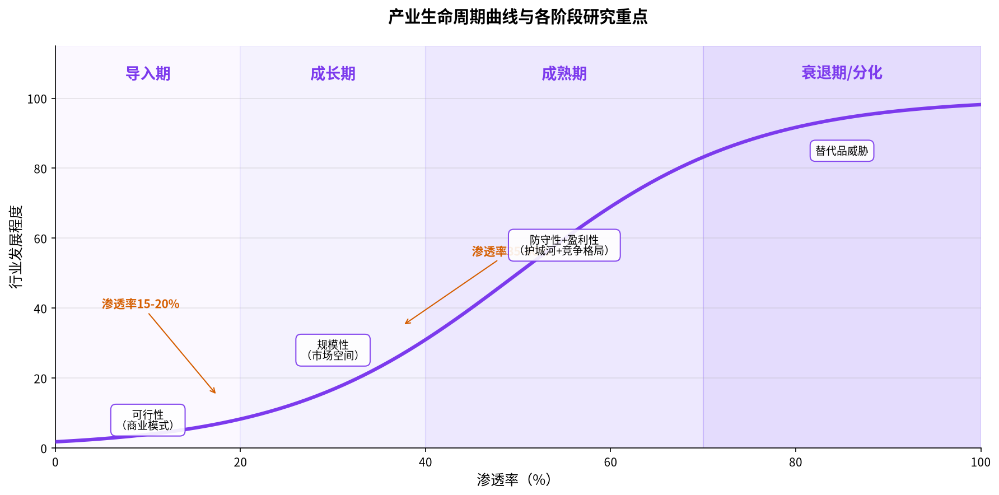
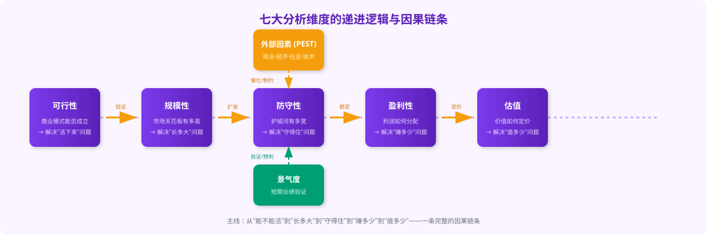
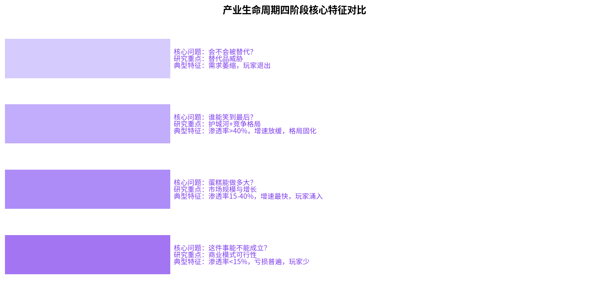
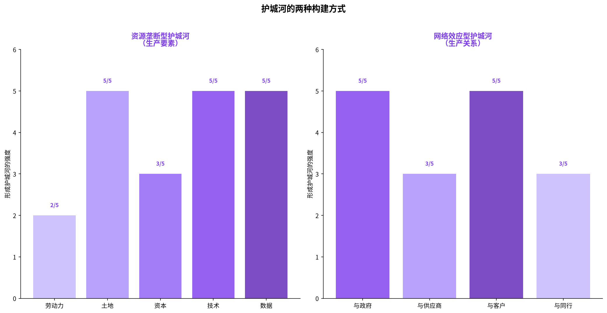
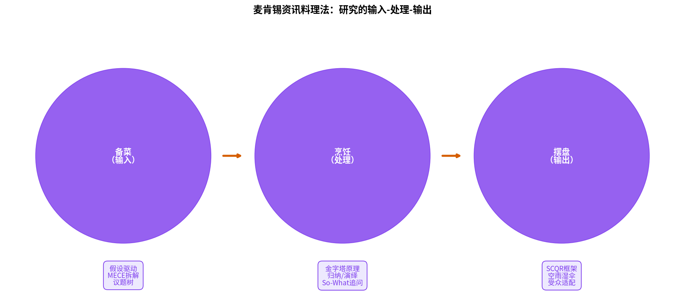

肖璟《如何快速了解一个行业》全书精解与售前应用指南
——肖璟《如何快速了解一个行业》全书精解与售前应用指南
完成日期：2026年7月20日 解读对象：肖璟《如何快速了解一个行业》（人民邮电出版社，2025年8月） 读者定位：锐捷网络售前工程师 关注方向：连续性、因果性、售前融合
肖璟《如何快速了解一个行业》的核心贡献，在于用"产业生命周期"这根主线，将原本零散的分析模型串联成一个动态、连续、有因果逻辑的完整体系。传统框架（PEST、波特五力、SWOT等）像一张张静态地图，各自描述行业的一个侧面，却无法回答"为什么要从这些维度入手"以及"各维度之间是什么关系"；而本书的框架则像一条时间轴，沿着"导入→成长→成熟→衰退"的演进路径，依次抛出可行性、规模性、防守性、盈利性、估值五大核心命题，每一个命题都承接前一个阶段的结论，又为后一个阶段的分析埋下伏笔。
对于售前工程师而言，这套方法论的价值远超投资研究本身。售前工作的本质——在最短时间内吃透陌生行业、找准客户痛点、设计有说服力的方案、打动决策者——与麦肯锡分析师"一周摸清一个行业"的工作几乎同构。传统售前依赖个人经验和悟性，而本书提供了一套可复制、可培训、可考核的系统方法。从需求洞察到方案设计，从竞品分析到高管汇报，七大分析维度与"资讯料理法"三阶段模型几乎可以完整映射售前全流程。
"只要掌握正确、系统的方法论，大多数人都能得出准确率很高的分析结果。" —— 肖璟 (豆瓣读书)
《如何快速了解一个行业》是麦肯锡前分析师肖璟的新作，2025年8月由人民邮电出版社图灵新知品牌出版，全书424页，豆瓣评分8.2分，位列豆瓣2025年度商业·经管图书第6位 (豆瓣读书)。
肖璟毕业于香港中文大学，曾供职于麦肯锡金融机构组，后创办"1日闻研究院""TermsAI"，也是公众号"很帅的投资客"的主创，著有《风口上的猪》《无现金时代》等畅销书 (豆瓣读书)。麦肯锡前专家副董事邱天评价道："肖璟是我在麦肯锡12年生涯中印象非常深刻的研究分析师，他常能在很短的时间内针对一个领域给出全面而精准的信息和洞见，包括市场趋势、玩家画像、成功要素，等等。这本书是他研习多年的心法总结，实操性强，值得推荐。" (豆瓣读书)
本书的定位非常明确——它不是一本学术专著，而是一本工具书。肖璟将其归纳为四种使用方式：作为模板（研究新行业时套用框架）、作为地图（查找资讯源）、作为培训材料（新人入门与老手系统化）、作为案例集（用案例佐证观点）(中国经济导报)。
肖璟在书的开篇就直指传统行业研究教育的两大核心问题，这也是他写作本书的根本动因：
第一个问题：理论与实际脱节。 "商学院课本上的知识跟产业界的实际应用之间，其实是存在一条鸿沟的。过往，我们研究所有一些背景很好的优秀实习生（985/211高校毕业生或者具有美国常春藤盟校背景，并在不少券商的研究部门实习过），他们在分析行业时，却还是会眉毛胡子一把抓，生搬硬套学过的模型，不得要领。" (博客园·读书笔记) 这是一个非常犀利的观察——很多受过正规商科教育的人，学了一堆模型，却在真实的行业研究面前手足无措。
第二个问题：知识点之间割裂。 "课本或在线课程提供的大多数框架，你学到的并不是一个整体，而是零散的几个概念模型。不同的模型之间并没有建立起联系。换句话说，知识点之间是'割裂'的。" (博客园·读书笔记) 这就解释了为什么很多人能说出PEST、波特五力、价值链、SWOT这些名词，却无法用它们做出真正有深度的分析——因为这些模型在他们脑子里是孤立的"云团"，而不是一棵有主干、有分支、有脉络的"树"。
肖璟用一个生动的比喻总结了这个痛点："真正实用的，应该是'树状'的知识体系，而不少课程给到我们的，只是一团团'云状'的知识。不同的云团并没法建立起联系。" (CSDN博客)
这两大痛点的提出非常关键——它解释了为什么我们需要一本新的行业研究方法论书籍，也为后续整个框架的展开埋下了伏笔。本书的所有内容，本质上都是对这两个问题的回应：用"贴近实际"的框架解决第一个问题，用"以生命周期为主线"的串联解决第二个问题。
全书共分为四大部分，呈现出明显的"理论→实战→方法→工具"的递进结构：
第一部分：行研框架篇（第1-8章）——这是全书的核心，系统介绍了以产业生命周期为轴线的七大分析维度。第1章是主框架总览，第2-8章分别展开可行性、规模性、防守性、盈利性、估值、外部因素、景气度七个维度。
第二部分：行研实战篇（第9章）——以新能源汽车行业为完整案例，演示如何用前面八章的框架系统分析一个真实行业，把理论转化为实操。
第三部分：研究方法篇（第10-11章）——从"研究什么"转向"如何研究"，第10章讲研究的本质，第11章详细介绍麦肯锡分析师的"资讯料理法"（输入-处理-输出三阶段）。
第四部分：研究工具篇（第12-13章）——第12章梳理五类资讯源（统计机构、信息检索工具、社交网络、研究机构、专业数据库），第13章专门探讨生成式AI在行业研究中的应用，是本书最具时代感的内容。
这个结构设计非常用心——它不是简单的内容堆砌，而是遵循了"先搭骨架（框架）→再看实例（实战）→再练内功（方法）→再拿兵器（工具）"的学习路径，符合从认知到掌握的心理规律。
本书最有价值的地方，不在于它提出了多少新的分析模型——事实上，书中提到的大部分概念（商业模式画布、TAM/SAM/SOM、护城河、PEST等）都不是作者首创的。本书真正的创新，在于"串联"——它用产业生命周期这条主线，把原本各自为政的分析模型串成了一个有因果、有层次、有优先级的完整体系。
传统教学中，PEST是一章，波特五力是一章，价值链是一章，SWOT又是一章。它们之间是什么关系？为什么分析一个行业需要同时看这么多维度？每个维度解决什么问题？先看什么后看什么？这些问题传统教学从不回答，于是学生学到的就是一堆零散的工具。
而肖璟的框架给出了清晰的答案：
这就是为什么本书读起来有一种"通透感"——它不是在教你一堆模型，而是在给你一套有内在逻辑的思维方式。下面的章节，我们就沿着这条主线，把整个方法论体系完整地展开。
在深入具体方法之前，有必要先回答一个根本问题：我们为什么要做行业研究？
肖璟给出了三个层面的答案。从投资角度，"一整套逻辑自洽、推演严密、结果可观测、体系可修正的研究框架是研究流程中必不可少的一环" (CSDN博客)。从择业角度，"选择比努力更重要——选对行业所带来的收益远远高于从'疯狂内卷'中多赚的加班费" (CSDN博客)。从创业角度，扎实的行业研究是找对方向的前提。
但如果往更底层看，行业研究的本质其实是减少不确定性。人类对不确定性有一种天然的厌恶——不确定意味着风险，风险意味着可能的损失。行业研究就是通过系统地收集信息、分析规律、预判趋势，把"未知"转化为"已知"，把"不确定"转化为"有把握"，从而让决策更加明智。
这个底层目的决定了行业研究的两个基本特征：
第一，行业研究永远是概率性的，不是确定性的。没有任何研究方法能保证100%准确预测未来，我们能做的只是提高判断正确的概率。肖璟也强调"准确率很高的分析结果"，而不是"绝对正确的结果" (中国经济导报)。理解这一点非常重要——它让我们对研究的局限性保持清醒，不会因为一次判断错误就否定整个方法论体系，也不会因为方法有效就盲目自信。
第二，行业研究是有成本的，边际收益递减。研究越深入，获取新信息的成本越高，而新增信息带来的决策改善越小。所以行业研究不是越深入越好，而是要在"研究深度"和"决策时机"之间找到平衡。这也解释了为什么本书的书名强调"快速"——在商业世界里，速度本身就是一种竞争力。
肖璟在书中提到了行业研究的三类主要应用场景，每一类对研究深度和重点的要求都不同：
投资场景是行业研究最经典的应用。无论是一级市场的VC/PE还是二级市场的股票投资，都需要通过行业研究来判断"值不值得投"。投资场景下的行业研究，关注的核心是价值发现——找到被低估的行业或公司，在价值被市场充分认知之前提前布局。研究的时间维度较长，通常看3-5年甚至更久的趋势。财务深度是重点，包括收入、利润、现金流、估值等指标。
择业场景是肖璟特别强调的一个应用方向。"选择比努力更重要"这句话可能会戳中很多人的痛点——在一个下行的行业里，再怎么努力也事倍功半；而在一个上升的行业里，顺势而为就能事半功倍。择业场景下的行业研究，关注的核心是个人成长空间——这个行业有没有前途？进入这个行业能获得怎样的成长和回报？研究的时间维度中等，通常看1-3年的趋势。
创业场景是对行业研究要求最高的应用。创业者不仅要判断行业有没有机会，还要判断"这个机会是不是我的"——我的能力、资源、团队能不能在这个行业里撕开一道口子。创业场景下的行业研究，关注的核心是可行性与切入点——这个商业模式跑得通吗？我的差异化优势在哪里？研究的时间维度可长可短，但深度要求最高，因为真金白银要投进去。
这三类场景虽然目的不同，但使用的基础方法论是相通的。肖璟的框架之所以有价值，就在于它的通用性——学会了这套方法，无论是做投资、选职业还是创事业，都可以用同一套底层逻辑去思考。
"选择比努力更重要"是书中反复出现的一个观点，也是最容易引起共鸣的一句话。但这句话不能停留在鸡汤层面，我们需要理解它背后的底层逻辑。
从经济学角度看，"选择"本质上是配置资源的决策，而"努力"是资源投入的数量。资源配置的效率，远大于资源投入的数量。举个简单的例子：同样投入1000小时的努力，在一个年增速30%的行业里，你的个人产出可能随行业水涨船高，每年增长20%；而在一个年增速-5%的行业里，再怎么努力可能也只是勉强维持不被淘汰。十年下来，两者的差距可能是数倍甚至数十倍。
这就是红杉资本创始人唐·瓦伦丁那句名言的含义："下注于赛道，而非赛手。" (证券之星) 赛道选错了，再优秀的赛手也跑不出好成绩；赛道选对了，哪怕赛手只是中等水平，也能被行业浪潮推着往前走。
但需要注意的是，"选择比努力更重要"并不等于"努力不重要"。正确的逻辑是：选择是放大器，努力是基础。没有努力，再好的选择也只是空中楼阁；没有选择，再大的努力也可能南辕北辙。两者的关系是乘数关系，不是替代关系。
对于售前工程师来说，这个观点同样适用。选择在哪个行业深耕（比如是专注教育行业还是金融行业）、选择在哪家公司任职、选择跟进什么类型的项目，这些"选择"对个人成长和职业回报的影响，往往比"加班多少小时""做了多少份方案"这样的"努力"要大得多。而做出更好选择的前提，就是具备行业研究的能力。
肖璟在第三部分"研究方法篇"中，提出了一个非常精彩的视角——行业研究的本质，就是资讯的"输入-处理-输出"过程。这个观点把行业研究从一个"玄学"变成了一个可以拆解、可以训练、可以优化的流程。
输入阶段（备菜）：就是收集信息。但不是盲目地收集，而是"假设驱动"的——先有一个初步的假设，然后带着问题去搜集资讯，有的放矢。这是高效研究和低效研究的根本区别。低效的研究者是"先找一堆资料再说"，结果被信息淹没；高效的研究者是"先定义问题，再找资料验证"。
处理阶段（烹饪）：就是对收集到的信息进行加工提炼。运用金字塔原理、归纳演绎、So-What追问等方法，从碎片化的信息中提炼出有深度、有逻辑的核心观点。这个阶段是最体现研究功力的——同样的资料，不同的人能读出完全不同的东西。
输出阶段（摆盘）：就是把研究结果以有说服力的方式呈现出来。再好的研究结果，如果表达不好、没人听，也是白费功夫。SCQR框架（情景-冲突-问题-解答）和"空雨湿伞"模型就是输出阶段的核心工具。
这个"输入-处理-输出"的三段式模型，就是麦肯锡分析师所谓的"资讯料理法" (腾讯新闻)。它的价值在于，把"研究"这个看似不可捉摸的能力，拆解成了三个清晰的环节，每个环节都有具体的方法和工具可以训练。这也是为什么肖璟敢说"只要掌握正确、系统的方法论，大多数人都能得出准确率很高的分析结果" (中国经济导报) ——因为研究能力不是天赋，而是技能，是可以通过刻意练习习得的。
这个视角对售前工程师尤其有启发。售前工作不也是"资讯的输入-处理-输出"吗？输入阶段是客户调研和需求挖掘，处理阶段是方案设计和策略思考，输出阶段是方案汇报和沟通说服。三个阶段用的是同一套底层逻辑。理解了这一点，你会发现行业研究方法论和售前方法论，本质上是通的。
如果要问本书最重要的贡献是什么，答案一定是：以产业生命周期为核心轴线，将所有分析维度串联成一个动态的、有因果关系的分析体系。 这是理解全书的钥匙。
传统的行业分析框架，无论是PEST、波特五力还是SWOT，本质上都是静态的——它们描述的是某个时间点上行业的状态，就像一张照片。但行业不是静止的，它是一个有生命、会成长、会衰老的有机体，就像一个人从婴儿到少年到壮年到老年，不同阶段面临的问题完全不同，关注的重点自然也应该不同。
肖璟敏锐地抓住了这一点。他的框架不是从"行业有哪些维度可以分析"出发，而是从"行业处在什么阶段、这个阶段最核心的问题是什么"出发。先定阶段，再定重点——这是整个方法论的底层逻辑。

传统的产业生命周期理论用"营收-时间"坐标来划分阶段，肖璟认为这个框架的第一个重要。但这个方法在实操中有很大的问题："真要判断现在所处阶段的话，只能把行业里所有公司的营收加起来，然后算每个时间节点的斜率……这个方法超级无敌不实用，有点'真空球形鸡'的感觉。毕竟真实世界的产业营收曲线，不会那么平滑，而是会因为外部环境的变化而有起有伏。" (CSDN博客)
于是他提出了一个关键的改进：把横轴从"时间"换成"渗透率"。
这个改动看似简单，实则非常高明。渗透率——"现在已经被服务到的用户，占所有潜在用户的比例"——反映的是用户的接受程度，比营收更能准确地衡量产业发展的真实阶段。营收可能因为价格波动、政策补贴、短期事件而大起大落，但渗透率的变化是相对平滑的，更能体现产业发展的内在节奏。比如口罩行业在疫情期间营收暴涨，但你不能说它进入了成长期，因为它的渗透率（日常使用口罩的人群占比）并没有发生结构性变化。
根据渗透率，肖璟将产业生命周期划分为四个阶段，并给出了经验性的划分标准：
"一般来说，一旦行业的渗透率达到15%～20%，行业就会进入快速提升的阶段，此时对应的是行业的成长期。但是渗透率提升至35%～40%以后，行业发展的脚步往往就开始放慢了，此时对应的是行业的成熟期。" (雪球·读书笔记)
当然，这个数值是经验值，不同行业会有差异。有的行业可能渗透率到10%就进入快速成长期，有的行业可能到30%才加速。但作为一个快速判断的标尺，它已经足够好用了。
这个框架最大的价值，就是解决了前面提到的"知识点割裂"的问题。有了产业生命周期这条主线，所有的分析维度就不再是一团团孤立的云，而是一棵有主干、有分支、有层次的树。
每个阶段有每个阶段的核心命题，每个分析维度都服务于一个特定的核心命题。当你研究一个行业时，你不需要把所有维度都分析一遍——你先判断行业处在哪个阶段，然后聚焦这个阶段的核心命题，用对应的分析工具深入下去。
这就从"面面俱到但蜻蜓点水"，变成了"重点突出且深入本质"。这就是为什么肖璟的框架比传统框架更实用——它不是给你一堆工具让你自己选，而是告诉你在什么情况下应该用什么工具。

接下来，我们沿着生命周期的演进路径，逐个展开七大分析维度，讲清每个维度的因果逻辑——为什么这个阶段要分析这个维度？这个维度解决什么问题？它和前后维度之间是什么关系？
导入期是一个行业的婴儿期。这个阶段的产品还很稚嫩，市场还很陌生，消费者还在观望。整个行业最大的问题不是"能做多大"，而是"能不能活下去"。
"处于这个阶段的公司往往是在一级市场向风险投资基金圈钱。拿到融资后他们往往会发各种公关稿造势，会整个行业都在炒作概念。甚至可能会有骗子开始蹭概念、进行诈骗。有些上市公司为了把自己的股价炒上去，会收购一些资产跟风炒概念。最典型的就是之前的元宇宙概念。" (CSDN博客)
这段话非常真实地点出了导入期行业的特征——喧嚣、混乱、鱼龙混杂。大家都在讲故事，但故事能不能变成生意，谁也不知道。90%以上的初创公司会死在这个阶段，很多热门赛道最后也被证明是伪需求。
所以，导入期行业研究的第一要务，不是算市场空间有多大，而是判断这件事到底能不能成立。如果商业模式本身就跑不通，再大的市场空间也跟你没关系，因为行业根本活不到那一天。这就是为什么可行性分析要放在所有维度的最前面——它是第一性的、前提性的。
要分析可行性，首先要搞清楚什么是商业模式。肖璟在书中花了不少篇幅讨论这个问题，因为"商业模式"是一个被滥用的词，每个人嘴里都在说，但每个人说的可能不是一回事。
他梳理了三种常见的定义角度：
第一种，侧重于盈利模式——关注的是"提供什么样的产品、满足什么样的需求、是怎么赚钱的"。这是最通俗的理解，也是最窄的理解。很多人说商业模式，其实说的就是"怎么赚钱"。
第二种，侧重于交易结构——关注的是"商品、资金、信息如何在研究对象及其供应商、客户、合作方之间流动"，也就是产业链关系。这个角度比盈利模式宽，它不仅看你赚不赚钱，还看你在产业链中处于什么位置、和上下游是什么关系。
第三种，侧重于经营战略——关注的是"采取低成本模式还是差异化模式"。这是从竞争策略的角度定义商业模式。
然后肖璟给出了一个更高维度的总结："其实，上述定义都只是商业模式的一个截面。如果高度抽象地用经济学语言来描述商业模式，它其实就是对经济活动中的生产力要素和生产关系要素的各种排列组合。" (网易订阅)
这个定义非常有深度。它把商业模式从"怎么赚钱"这种具象的问题，提升到了经济学基本原理的层面。生产力三要素是劳动者、劳动资料、劳动对象；生产关系三要素是生产资料所有制、人们在生产中的地位和相互关系、产品分配方式。商业模式，就是这六个要素的排列组合。
听起来很抽象，但一旦理解了这个定义，你就能穿透表面现象，看到各种商业模式的本质区别。比如苹果公司的商业模式，本质上就是凭借强大的品牌和技术（劳动资料），在和供应商、开发者（生产关系中的地位）的博弈中占据绝对强势，从而拿走了产业链中最大的一块利润（产品分配方式）。
当然，纯理论的定义不好用。从实操角度，肖璟推荐了一个非常经典的工具——商业模式画布。
"一个实用的工具是'商业模式画布'，通过九个问题快速理清一个生意的逻辑骨架：客户群体、价值主张、渠道通路、客户关系、收入来源、核心资源、关键业务、重要合作、成本结构。" (网易订阅)
这九个要素可以分成几组来看：
九个问题，就能把一个生意的骨架搭起来。肖璟说："实操时，我的习惯是，先找来几份行业研究报告，对照商业模式画布按图索骥。我会从行业研究报告中找到各个维度的关键信息，然后将商业模式画布填满。在这个过程中，我对一个行业的理解会从无到有。" (网易订阅)
这是一个非常实用的方法——当你面对一个完全陌生的行业时，不要慌，拿出商业模式画布这张纸，一个一个空填，填完了，你对这个行业的基本认知也就建立起来了。
光有商业模式还不够，还要验证它行不行。肖璟提出了可行性验证的两步法：
"要判断一个行业的商业模式靠不靠谱，可以分两步走——先评估销售的可行性，也就是卖不卖得出去（是否能顺利销售）；再评估盈利的可行性，也就是能不能赚得到钱（是否能实现利润）。" (博客园·读书笔记)
这个顺序很重要。先看能不能卖出去，再看能不能赚到钱。很多人搞反了顺序，先算成本和利润，结果产品根本没人买。"卖出去"只是第一步，"赚到钱"才是硬道理。
利润可行性的核心工具是UE模型（Unit Economics，单位经济模型）。"通过搭建UE模型来评估利润可行性的底层逻辑也很简单：如果一家门店、一辆车、一款护手霜、一个订单都赚不到钱，那么多家店、多辆车、多款产品、多个订单能赚到钱的可能性就小了很多。相反，一旦最小运作单位可以赚到钱，那么进行规模化复制也显得更为合理。" (博客园·读书笔记)
这个逻辑非常扎实。单位经济模型跑不通，规模越大亏得越多；单位经济模型跑得通，规模越大赚得越多。这就是为什么投资人看早期项目时，第一个问题往往是"你的单位经济模型是什么样的"——这是可行性的试金石。
验证可行性还有两个很实用的方法，肖璟称之为"时间维度对标"和"空间维度对标"。
时间维度对标的逻辑是："需求是永恒的，产品一直在变。成功的商业模式往往不是创造新需求，而是用新方式满足旧需求。" (博客园·读书笔记) 这句话非常经典——人类的底层需求（衣食住行、社交、娱乐、自我实现……）几千年都没变过，变的只是满足需求的方式。所以当你看到一个新商业模式时，不妨问问自己：它满足的是哪个永恒需求？这个需求以前是被什么产品满足的？为什么现在这个新方式更好？如果答案是"它创造了一个全新的需求"，那你就要警惕了——大概率是伪需求。
空间维度对标的逻辑是：对标成熟市场，看有没有类似的成功案例。这就是孙正义"时光机理论"的逻辑——美国有的东西，中国大概率也会有；一线城市有的东西，二三线城市大概率也会有；发达国家走过的路，发展中国家大概率也要走。如果一个模式在更成熟的市场已经被验证过了，那么在相对不成熟的市场成功的概率就大很多。
这两个对标方法，本质上都是在用历史经验和他人经验来降低判断的不确定性。人类社会的发展有规律可循，别人踩过的坑、走过的路，对我们有很大的参考价值。
当一个行业跨过了15%～20%的渗透率门槛，就进入了成长期。这时候，商业模式已经被验证了——这件事能成立、能赚钱。那接下来最大的问题是什么？是这件事能做多大？市场的天花板在哪里？未来能增长多快？
"成长期阶段我们最应该关注的，是市场规模。虽然说需求是存在的，但是要是没法把规模做大，公司也无法上市、顺利退出。从投资的角度，这就只是一门现金流生意，没法给到很高的估值。各地上市都有门槛，要么是收入或利润足够高，要么是市值足够大。" (CSDN博客)
这个逻辑链条很清晰：可行性解决的是"能不能活"的问题，规模性解决的是"能长多大"的问题。一个生意能活下来了，但如果只能做到几千万营收，那也就是个小生意，不值得大资本进入，不值得all in。只有蛋糕足够大，才能孕育出伟大的公司，才能带来丰厚的回报。
这也是为什么红杉资本唐·瓦伦丁说"下注于赛道，而非赛手"。赛道够宽，哪怕你不是跑得最快的那个，也能分到不小的一块蛋糕；赛道太窄，就算你跑了第一，也赚不了多少钱。
"市场规模的重要性无论怎么强调都不为过，只有一个行业有足够的市场规模，才能孕育出体量大到足以上市的公司。" (证券之星)
谈到市场规模，肖璟引入了硅谷经典的TAM/SAM/SOM三层模型。这个模型看似简单，但很多人其实没有真正理解它的价值。
"总潜在市场是理论上的最大天花板；可服务市场是当前能力能触达的范围；可获得市场是短期内真正能获取的份额。" (网易订阅)
三层市场模型的价值在于，它强迫你从"想当然的大"，一层层过滤到"现实的小"。很多人一开口就是"万亿市场"，但那是TAM，跟你有关系吗？你的SAM可能只有几百亿，你的SOM可能只有几个亿。把这三个数搞清楚了，你对市场规模的认知才是真实的。
举个例子：一家做AI医疗影像的公司，TAM可能是全球万亿级的医疗影像市场，SAM是中国三甲医院的百亿级市场，而SOM可能只是几家医院的试点收入，几千万而已。从万亿听起来很激动人心，但真正能落地的才是真的。
知道了要算哪几层市场，接下来是怎么算。肖璟介绍了两种主流的测算方法：
Top-down（自上而下）：从一个很大的数开始，一层一层往下乘。比如整个市场总规模是1000亿，我们能切的细分市场是10%，就是100亿；我们的产品能覆盖其中的30%，就是30亿；我们能拿到10%的份额，就是3亿。
Bottom-up（自下而上）：从最小的单元开始往上加。比如我们的产品客单价是10万，目标客户有1000家，渗透率20%，就是2亿；如果客单价涨到15万，渗透率到30%，就是4.5亿。
两种方法各有优劣。Top-down的优点是快，缺点是每一层的比例都可能拍脑袋，结果偏差很大。Bottom-up的优点是扎实，每一步都有依据，缺点是费时间，而且容易漏掉一些机会。最好的做法是两种方法都算，然后交叉验证。如果两个结果差不多，说明你的测算比较靠谱；如果差很多，那就说明哪里算错了，需要回去检查。
本书第3章的标题叫"规模性：为什么有些公司上不了市"。这个标题很有意思——它点出了一个很多人没有想清楚的问题：不是所有好生意都能成为上市公司。
上市有门槛，不管是营收门槛、利润门槛还是市值门槛，归根结底都是规模门槛。一个生意再好，如果做不大，就永远上不了市。而做不大的原因，可能是市场本身就小，可能是商业模式本身就不具备可复制性，可能是行业太分散整合不了。
理解了这一点，你就能理解为什么投资人那么看重市场规模和增长速度——因为他们的退出路径（IPO、并购）都要求足够大的规模。没有规模，就没有退出，没有退出，投资就没有回报。
这个逻辑对售前同样适用。你找客户、做项目，也要看"规模"——这个客户的预算有多大？这个行业的整体市场有多大？如果这个客户每年IT投入只有几百万，你再怎么深耕也做不出大项目；如果一个行业整体信息化水平很低、预算很少，你再努力也打不开局面。选择客户、选择行业，本质上也是在选"赛道"。
当渗透率超过40%，行业就进入了成熟期。这时候市场接近饱和，增速掉档，行业从"一起做大蛋糕"的增量时代，进入了"争夺现有份额"的存量时代。
"成熟期阶段，业务增速一般会掉档。作为投资者，这时候我们要担心的是，这个行业会不会被其他行业给降维打击，直接被取代了、进入衰退期。所以我们最关注的，通常是它们是不是有足够宽的护城河。" (CSDN博客)
为什么成熟期同时有两个核心命题：防守性和盈利性。
防守性回答的是"这个行业/公司能不能守住自己的地盘，不被替代品颠覆？**盈利性回答的是"在存量竞争中，谁能分到更多的蛋糕？
这两个命题其实是一体两面。有防守才有盈利——守不住地盘，利润迟早会被竞争吃掉；有盈利才能加强防守——赚不到钱，就没有资源构建护城河。两者相辅相成。
但两者的先后顺序是：**先看防守性，再看盈利性。如果防守不行，行业很快就要被替代了，再高的盈利也是暂时的。如果防守够强，行业能持续稳定的盈利才是可持续的。

说到护城河，大多数人第一反应是巴菲特的那句名言。肖璟也引用了巴菲特的话："一家真正伟大的公司，必须有一条坚固持久的护城河。" (证券之星)
但肖璟没有停留在引用名人名言。他对传统的护城河定义做了一个很有价值的重构。
传统上，帕特·多尔西在《巴菲特的护城河》里总结了护城河的四个要素：无形资产、转换成本、网络效应、成本优势。肖璟认为这个定义有两个问题："一是，它漏掉了一些很重要的护城河；二是，有些护城河互为因果，比如成本优势，其实它是网络效应带来的结果之一。" (网易订阅)
于是他提出了自己的分类框架——从生产要素和生产关系的角度，把护城河分为两大类：
"第一种方式是，通过独占生产要素，进而形成资源垄断护城河。第二种方式是，通过独占生产关系，进而形成网络效应护城河。或者更简单地说，我们可以通过积累资源和建立关系这两种手段来构建护城河。" (证券之星)
这个分类非常有洞察力。它把五花八门的护城河类型，归到了两个最根本的经济学范畴下。而且它解释了为什么成本优势不是独立的护城河——成本优势可能来自资源垄断（比如你有最好的矿山，成本自然低），也可能来自网络效应（比如你规模最大，单位成本最低），它是结果不是原因。

第一类：资源垄断型护城河（生产要素）
生产要素分为五类：劳动力、土地、资本、技术、数据。
劳动力："在劳动力这个生产要素上，企业很难构建护城河。人才都可以被高薪挖走，除了一些极特殊的行业，例如核聚变行业目前专业人才极度稀缺，高级人才几乎全部掌握在国家研究所、国资央企背景下，几乎不在市场上流通。" (搜狐财经) 所以人力资源一般构不成护城河。
土地："土地不光是指那片地，也包括那片地上的资源禀赋。土地要素还是很容易形成护城河的，比如矿产企业，如果掌握了一个品味优秀的矿山开采权，相比其他企业自然有优势。对于新能源发电行业，风光电站，特别是光伏，极其依靠一个良好的地理位置，才能有较好的利用小时数和发电效率。" (搜狐财经)
资本：资本的特点是有很强的马太效应。"资本这一要素拥有很强的马太效应：有钱人可以用来抵押和借贷的资产可能更多，而且往往信用更好。在银行等金融机构看来，他们的偿还概率更大，所以有钱人获得融资容易得多。正是由于资本的马太效应，监管才会不断强调要'防止资本无序扩张'。" (雪球·读书笔记) 但资本本身难以构成护城河——"资本这个要素，拥有很强的马太效应。但资本难以构成护城河，重资产行业例如汽车，其实玩家也很多。" (证券之星) 因为只要行业有利润，资本就会涌进来。
技术："技术不光指科技，也包括版权、专利等等，很容易形成护城河。例如迪士尼的IP版权。专利对于科技行业和医药行业，就像版权对于内容行业、秘方对于中医行业，是不容忽视的护城河。比如，片仔癀、云南白药、可口可乐等知名企业的独家秘方价值连城。" (搜狐财经) 技术是非常经典的护城河类型。
数据："指企业掌握的关于产品、客户等等的数据，并且这些数据一般都不会对外提供，外人想要获取难如登天。在人工智能、大数据技术越来越发达的现在，掌握了数据就掌握了财富。" (搜狐财经) 数据作为新生产要素的护城河作用，在AI时代越来越重要。
第二类：网络效应型护城河（生产关系）
生产关系包括四类关系：与政府的关系、与供应商的关系、与客户的关系、与同行的关系。
与政府的关系："不少行业需要得到政府机构的认证或许可，才能合法经营。对于已经拥有牌照的公司来说，获得的特许权便是极其牢固的护城河。比如，通信和电热燃水等公共事业行业。" (证券之星) 这是最强的护城河之一——政策直接不让别人进来。
与供应商的关系："通过和供应商的关系间接控制原材料。主要表现一是能够以更低价格获得原材料……二是只有你能获得原材料，例如在原料短缺时，一家企业依靠和上游供应商的战略合作协议，原料供应比其他竞争者充足，就能趁机抢占市场。" (证券之星)
与客户的关系：这是最常见也最重要的护城河类型。肖璟进一步把它拆解为三个层面：
转换成本：最典型的就是微信——你的朋友都在上面，想换一个社交软件的成本非常高。企业客户的转换成本更高——系统迁移、数据迁移、人员培训，都是巨大的成本。
与同行的关系："如果同行足够团结，可以形成合力，让行业的护城河变得更宽，形成价格联盟，行业的寡头会通过这种方式提高利润。石油行业就是一个典型的例子。当行业发展到一定阶段，相关技术越发成熟、产品需要量产之时，制定行业标准就显得很有必要。这些技术标准的制定就是为了巩固先发者优势，这种护城河比较难以绕过。" (证券之星)
这个两类型护城河的分类框架非常强大。它不仅让你对护城河有一个系统性的认知，更重要的是，它给了你一个分析竞品的思路——你想知道一家公司的护城河有多宽，就从这九个维度（5个生产要素+4个生产关系）一个一个过，看看它在哪些维度有优势，优势有多大。
如果说防守性是向外看——看有没有被颠覆的风险，那么盈利性就是向内看——看利润怎么分配。
肖璟把盈利性拆解为横向格局和纵向格局两个维度：
"横向格局：研究的是同行间是怎么分蛋糕的。纵向格局：研究的是上下游是怎么分蛋糕的。" (博客园·读书笔记)
横向格局的关键指标是行业集中度（CRn）。CRn就是前n大企业的市场份额之和。比如CR3就是前三名的市场份额加起来，CR5就是前五名。"随着行业集中度的提高，龙头企业的议价权增强，相应的盈利能力也会提升。" (博客园·读书笔记)
行业集中度的变化是一个非常重要的观察指标。在成熟期，一个核心的投资逻辑是行业集中度的提升——龙头企业通过各种整合手段拿下更多的市场份额。"行业龙头有着强大的护城河，估值会随着竞争格局的改善而提升，这一现象被一些分析师称为'龙头进阶'。" (证券之星)
纵向格局的关键指标是销售毛利率。"判断行业在产业链中地位的指标，即看各环节的销售毛利率。我们可以通过产业链各个环节的毛利率以及各个环节占用上下游资金的能力来判断行业在产业链中的地位。" (雪球·读书笔记)
很多行业的利润分布呈现"微笑曲线"——上游的核心零部件和下游的品牌渠道利润丰厚，中间的制造组装环节利润微薄。比如智能手机行业，苹果（品牌）和高通（芯片）赚走了大部分利润，而富士康（组装）只能赚点辛苦费。
理解了产业链的利润分布，你就知道钱在哪里、机会在哪里。**对售前来说，这个认知尤其重要——利润最丰厚的环节，往往也是IT投入最大方的环节。你找对了利润池，才能做大项目。
很多人以为成熟期之后必然是衰退期，其实不然。肖璟指出了成熟期之后的三种可能：
"当一个行业处于成熟期时，等待它的往往有3种可能：第一种是被替代品所替代，从此进入衰退期；第二种是找到第二增长曲线，相当于从导入期开始，从头再来；第三种则是成功阻挡了替代品的侵入，防守成功，市场从此进入'稳定市场周期化'的状态——行业会变成周期性行业。" (证券之星)
这三种结局的差别非常大。被替代就是死路一条，找到第二曲线相当于重生，周期化就是在波动中稳定存续。对这三种结局的判断，是成熟期行业研究最考验功力的地方。
为什么有些行业能穿越周期、长期存在？为什么有些行业昙花一现、迅速消亡？答案就在防守性里——护城河够不够宽，能不能挡住替代品的冲击。
当行业防守失败，被替代品攻破了护城河，就进入了衰退期。
衰退期有两种不同的情况，肖璟没有明说，但从他的论述中可以提炼出来：一种是自然衰老——需求本身没有消失，只是增长停滞甚至缓慢萎缩，行业还能维持很长时间，只是没有成长空间了。比如燃油车，虽然新能源车在替代它，但完全替代需要几十年的时间，燃油车行业还会存续很久。
另一种是彻底替代——新技术从根本上摧毁了旧行业的存在基础，旧行业快速消亡。最经典的例子就是胶卷相机被数码相机颠覆。
"如果是后者，必须高度警惕潜在的'行业杀手'——新技术可能从根本上摧毁该行业。" (网易订阅)
对于衰退期的行业，研究的重心应该转移到替代品上。"至于已经进入衰退期的企业，应把研究中心转移到替代品上，没有必要在一棵树上吊死。" (证券之星)
衰退期不是完全没有投资机会——比如行业集中度提升带来的龙头机会，或者困境反转的可能性。但总的来说，衰退期不是好赛道，研究它的意义更多是为了避开，而不是为了进入。
讲完了生命周期四个阶段的四个核心维度（可行性、规模性、防守性、盈利性），接下来是三个"外部"维度：外部因素、估值、景气度。
为什么叫"外部"维度？因为前面四个维度都是行业内部的——商业模式好不好、市场大不大、护城河宽不宽、竞争格局怎么样，都是行业本身的属性。而外部因素、估值、景气度，都是从外部视角看行业——外部环境对行业有什么影响、市场给行业什么定价、行业短期景气如何。
肖璟用了一个很形象的比喻："引爆行业还缺哪根导火线？"
行业本身的条件是"炸药"——炸药好不好、量够不够，决定了爆炸的威力有多大。而外部因素就是"导火线"——没有导火线，再好的炸药也炸不了。
"运用PEST模型从政治、经济、社会、技术四个维度审视行业的外部驱动或制约因素。当四股东风同时助推时，行业便快速起飞；反之，若四方面皆遇逆风，行业则举步维艰。" (网易订阅)
PEST四个维度：
"四股东风同时助推时，行业便快速起飞"——这句话很关键。一个维度的利好可能只是结构性的，但四个维度同时发力，才是行业级的大机会。新能源汽车就是最好的例子：政策有补贴（政治）、经济发展消费升级（经济）、环保观念普及（社会）、电池技术突破（技术）——四股东风一起吹，行业想不火都难。
但要注意，外部因素是**催化剂，不是决定因素。炸药不行，导火线再长也没用；行业本身的基本面不行，再多政策利好也只是短期行情。外部因素的作用是加速或者延缓行业的发展节奏，而不是改变行业的根本方向。
对售前也一样——你给客户做方案，PEST分析可以帮你把方案的价值从"解决一个具体问题，上升到"顺应大趋势"的高度。客户为什么要现在做？因为政策要求做是大势所趋——政策支持、技术成熟了、技术进步——四个维度都在推，早做早受益。
如果说外部因素是中长期的外部视角，那么景气度就是短期的外部视角。
"为什么要跟踪景气度指标？因为中长期的判断是对的，但短期可能有波动。如果你只看长期，可能会买在高点、卖在低点。景气度跟踪就是帮你预判短期的业绩增速，验证或者修正你的中长期判断。
"景气度跟踪有两个方向：纵向和横向。
纵向就是沿着产业链找先行指标。上游行业的景气度变化会沿着产业链传导。比如下游的需求起来了，先传导到中游，再传导到上游；上游的原材料涨价了，先影响中游，再影响下游。找对了先行指标，就能提前预判行业的景气变化。
"纵向：通过产业链上下游把握景气度。" (豆瓣读书)
横向就是看行业的关键指标。每个行业都有自己的高频指标——销量、价格、库存是最常见的三个。销量在涨、价格在涨、库存下降，说明景气度向上；销量在跌、价格在跌、库存积压，说明景气度向下。
"横向：通过行业关键指标把握景气度。" (豆瓣读书)
肖璟举了白酒行业作为案例——白酒的景气度指标包括：高端酒的批价（价格）、经销商的库存（库存）、动销情况（销量）。这三个指标组合起来，就能判断白酒行业的景气度处在什么水平。
景气度跟踪对售前有什么用？用处大了。你跟进客户的时候，客户的预算跟行业景气度高度相关。 行业景气的时候，客户预算充足，项目好做；行业不景气的时候，客户预算收紧，项目难做。你提前预判了客户行业的景气变化，就能提前调整你的策略——景气向上的行业加大投入，景气向下的行业收缩战线。
估值是第七个维度，也是最"金融"的一个维度。肖璟用了整整一章来讲估值，因为它直接关系到投资决策——再好的行业，买贵了也赚不到钱。
估值的核心逻辑是：不同生命周期阶段的行业，适用不同的估值方法。
"估值由投资者的资金能力/风险偏好与资产的赔率/概率共同决定。" (bilibili)
这个估值逻辑，本质上反映的是市场对行业的"定价"。成长期的行业估值高，不是因为它"值那么多钱"，而是因为市场预期它未来会增长，愿意提前给它定价；成熟期的行业估值低，不是因为它"不值钱"，而是因为它的增长已经被充分预期了。
对售前来说，理解估值逻辑有什么用？**理解了客户的估值逻辑，你就能理解客户的预算逻辑。成长期的行业（比如现在的AI行业），公司估值高、融资多、花钱大方，因为市场愿意投入预算充足，项目预算自然好做；成熟期的行业，估值低、融资难、花钱谨慎，预算紧张，项目自然难谈。
还有一层意思：客户的估值逻辑就是客户的估值就是客户的战略方向。比如一个上市公司，如果它正处在讲故事、在估值、在成长期，它的战略重心一定是增长——增长、扩张，那你就应该重点讲方案怎么帮它增长；如果它已经到了成熟期，战略重心是效率和成本，你就重点讲降本增效。
讲到这里，我们把七大维度都过了一遍。现在让我们退一步，看看它们串起来，看看这个体系的连续性和因果性——这是本书最有价值的地方。
这条因果链条是这样的：
第一步：可行性。 没有可行性，一切都是零。这件事能不能成立？有没有真实需求？商业模式跑不跑得通？单位经济模型赚不赚钱？这是最基础的前提。
第二步：可行之后看规模性。 商业模式跑通了，能做多大？市场天花板有多高？增长速度有多快？如果天花板够不够承载多少公司？
第三步：规模够大了看防守性。 蛋糕做大了，能不能守住吗？护城河够不够宽？会不会被替代品颠覆？有没有第二增长曲线？
第四步：防守住了看盈利性。 蛋糕能守住，那怎么分？横向谁拿多少？纵向哪个环节利润最厚？龙头企业能分到多少钱？
第五步：盈利确定了看估值。 盈利能持续，那值多少钱？市场给什么定价？现在买贵不贵？
这就是从内到外，再加上两个外部视角：外部因素是催化剂，影响行业发展的速度和节奏；景气度是短期验证，用来预判短期业绩波动。
这条链条的逻辑是层层递进的：可行性是前提，规模性是空间，防守性是持续性，盈利性是分配，估值是定价。一环扣一环，前一环不成立，后面的都不用看了。
这就是为什么肖璟的框架比传统框架好用。传统框架是并列关系——PEST、波特五力、价值链……都是并列的，你不知道先看哪个后看哪个，不知道哪个更重要。而肖璟的框架是递进关系——有先后顺序、有因果逻辑、有主次轻重。
而且不同行业的研究方法差异，本质上就是因为它们处在生命周期的不同阶段。研究新能源汽车和成长期的行业，重点看市场规模和增长速度；研究消费品这种成熟期的行业，重点看护城河和竞争格局；研究元宇宙这种导入期的行业，重点看商业模式能不能跑通。
这才是真正的"行业研究方法论"——不是给你一堆工具让你自己选，而是告诉你在什么情况下、应该用什么工具、为什么用这个工具。理解到这个层面，你才算真正把这本书读透了。
肖璟的七大维度框架是全书的主线，但在每个维度之下，都用到了一些经典的分析工具和模型。这些工具本身不是肖璟发明的，但他把它们放到了合适的位置，让它们各得其所。这一章我们就把这些框架单独拎出来，讲清楚它们的适用场景、使用方法、以及各自的局限。
理解每个框架的局限性，和理解它的用处一样重要。知道一个工具什么时候好用、什么时候不好用，你才算真正掌握了它。
PEST可能是最广为人知的战略分析框架了。几乎每个商科学生都学过，几乎每份行业报告里都会出现。但也正因为太常见了，很多人用着用着就变成了走过场。
PEST分析最适合用在两个场景：
第一，行业研究的开篇——宏观环境扫描。当你刚开始研究一个行业的时候，先从P、E、S、T四个维度扫一遍，看看大环境是什么样的、有哪些有利因素和不利因素、行业未来的大方向是什么。这能帮你快速建立全局视野。
第二，预判行业的拐点。很多行业的大转折都是因为外部环境的变化——政策变了、技术突破了、社会观念变了。PEST分析能帮你系统地扫描这些外部变量，提前发现可能的拐点。
肖璟把PEST放在"外部因素"这一章里，定位非常准确——它就是用来分析外部环境对行业的催化或制约作用的。"当四股东风同时助推时，行业便快速起飞；反之，若四方面皆遇逆风，行业则举步维艰。" (网易订阅)
很多人用PEST的方式是错的——他们把每个维度列几条，凑够四条就完事了。这不是分析，这是清单。
PEST分析的正确用法是：不是每个维度都要写，而是找出真正改变行业利润池的那个（或那几个）因素，然后深入分析。
有一个海外的战略顾问说得很到位："PEST分析中最常见的错误就是把它当成一个清单对照。团队把每个字母下面写几条要点，然后就结束了。那不是分析。真正有用的版本会问：这些因素中，哪一个正在真正改变行业的利润池？时间线是什么？" (nex-ray.net)
比如分析新能源汽车行业的PEST，你不用面面俱到地讲政治怎么影响、经济怎么影响、社会怎么影响、技术怎么影响。你应该抓住最核心的几个变量——比如政策补贴退坡的节奏、电池技术的突破、消费者环保观念的转变——然后深入分析这些变量会在什么时候、以什么方式、在多大程度上影响行业。
重点不是"全"，而是"准"。 找到真正的关键变量，比罗列一堆无关痛痒的事实有用得多。
PEST的局限主要有三个：
第一，它是静态的。PEST描述的是某个时间点的宏观环境，但宏观环境是在不断变化的。今天的利好可能变成明天的利空，今天的威胁可能变成明天的机会。用静态的PEST去分析动态的行业，很容易过时。
第二，它是清单式的，缺乏因果分析。很多人的PEST分析就是列事实，不说这些事实之间有什么关系、会怎样相互作用、最终会导致什么结果。列了一堆因素，但没有结论，等于没分析。
第三，它容易流于表面。政治因素有影响？谁都知道。经济形势不好？废话。这种正确的废话，写了跟没写一样。真正的分析要落到具体的政策、具体的经济指标、具体的技术突破上，而且要说清楚影响的路径和程度。
波特五力模型是迈克尔·波特1979年提出的，至今仍是战略管理领域最经典的框架之一。它把行业的竞争结构拆解为五种力量：现有竞争者的竞争程度、潜在进入者的威胁、替代品的威胁、供应商的议价能力、买方的议价能力。
"Five Forces analysis was groundbreaking in that it didn't reduce industry competition to 'rivalry among incumbents' alone—it expanded the lens to include suppliers, buyers, substitutes, and new entrants." (nex-ray.net)
波特五力最适合用来回答一个问题：这个行业的盈利能力怎么样？为什么？
五种力量的强弱，共同决定了一个行业的平均盈利水平。竞争越激烈、进入门槛越低、替代品越多、供应商越强、买方越强，行业的盈利就越差；反之，盈利就越好。
航空业就是最经典的例子——五种力量都很强，所以航空业的利润率一直很薄。而软饮料行业则相反——五种力量都比较温和，所以可口可乐、百事可乐能赚得盆满钵满。
在肖璟的框架里，波特五力模型大致对应"盈利性"这个维度——横向格局对应现有竞争者的竞争程度，纵向格局的上游对应供应商议价能力，下游对应买方议价能力，而"防守性"里的替代品威胁和进入壁垒，又分别对应五力中的另外两力。可以说，波特五力的五个要素，被肖璟重新组织后，分散到了防守性和盈利性两个维度里。
波特五力模型虽然经典，但它的局限性也越来越明显，尤其是在数字经济时代：
第一，它是静态的快照，不是动态的模型。"It is a static snapshot, not a dynamic model. It captures competitive forces at a point in time but doesn't automatically show how forces will evolve." (rework.com) 五力分析给你的是一张照片，而不是一段视频。它告诉你现在的竞争结构是什么样的，但不告诉你它会怎么变。
第二，它是为传统行业设计的，低估了网络效应。"It was designed for traditional industries and underweights network effects. In platform businesses, the 'competitor' is often also the complement provider, something the five forces model doesn't account for cleanly." (rework.com) 在平台经济里，竞争对手可能同时也是合作伙伴，供应商可能同时也是客户，这种复杂的关系是五力模型没有涵盖的。
第三，它低估了技术颠覆的速度。"It can underestimate the speed of technological disruption. A force rated Low today can become existentially High within two or three years when a breakthrough technology arrives." (rework.com) 五力分析里的"替代品威胁"通常是渐进式的，但在技术加速迭代的今天，颠覆性的替代品可能突然出现，彻底改写竞争格局。
第四，它忽略了互补品的作用。五力讲的都是竞争和威胁，不讲合作和互补。但在很多行业里，互补品的重要性不亚于替代品。比如智能手机的生态系统，App开发者是互补者，不是竞争者，但他们对行业的影响巨大。
尽管有这些局限，波特五力仍然是理解行业竞争结构的最佳起点。关键是不要把它当终点，要把它当起点——先用五力搭出竞争结构的骨架，再用其他方法填充动态的内容。
价值链分析也是波特提出的。它把企业的活动拆解为基本活动（进货物流、生产运营、出货物流、市场销售、服务）和支持活动（企业基础设施、人力资源管理、技术开发、采购），然后看每个环节的价值增值和成本构成。
放在行业层面，价值链就是产业链——从最上游的原材料，到中间的零部件、组装，到下游的品牌、渠道、服务，每个环节都在创造价值，也都在分配利润。
价值链分析最适合用来回答两个问题：
第一，这个行业的利润池在哪里？ 钱被哪个环节赚走了？是上游的核心部件，还是下游的品牌渠道？用肖璟的话说，就是"判断行业在产业链中的地位"，而最直观的指标就是销售毛利率。
第二，哪个环节是关键控制点？ 谁掌握了产业链的话语权？是上游的技术垄断者，还是下游的品牌方？掌握了关键环节，就掌握了利润分配的主动权。
在肖璟的框架里，价值链分析对应"盈利性"维度里的"纵向格局"。"纵向格局：研究的是上下游是怎么分蛋糕的。" (博客园·读书笔记)
价值链分析的局限性主要有两个：
第一，它偏静态，难以反映动态变化。价值链的结构不是一成不变的。技术进步、商业模式创新、行业整合，都会改变价值链的形态和利润分布。今天的高利润环节，明天可能变成低利润环节。只看某一个时间点的价值链，容易刻舟求剑。
第二，它对无形价值的衡量不够。传统的价值链分析偏重于有形的生产和流通环节，但在知识经济时代，很多价值是无形的——品牌、数据、算法、生态，这些东西怎么在价值链里定位？传统方法不太好处理。
尽管如此，价值链分析仍然是理解行业利润分布的基本工具。不管什么行业，你都要搞清楚钱是从哪里来、流向哪里、谁赚得多谁赚得少。这是行业研究的基本功。
商业模式画布是奥斯特瓦德和皮尼厄在2008年提出的，九个要素（客户群体、价值主张、渠道通路、客户关系、收入来源、核心资源、关键业务、重要合作、成本结构），一张纸就能画下一个生意的全貌。
商业模式画布最适合用在两个场景：
第一，快速理解一个新行业或新业务。当你面对一个完全陌生的行业，不知道从哪里下手的时候，拿出商业模式画布，九个格子一个个填，填完了，这个行业的基本轮廓也就出来了。肖璟自己就是这么做的："实操时，我的习惯是，先找来几份行业研究报告，对照商业模式画布按图索骥。我会从行业研究报告中找到各个维度的关键信息，然后将商业模式画布填满。在这个过程中，我对一个行业的理解会从无到有。" (网易订阅)
第二，分析商业模式的可行性。九个要素填完之后，你可以检查一下：这个模式有没有不自洽的地方？价值主张和客户群体匹配吗？收入来源能覆盖成本结构吗？核心资源能支撑关键业务吗？如果哪里对不上，说明这个商业模式可能有问题。
在肖璟的框架里，商业模式画布对应"可行性"维度——导入期的核心命题。导入期最重要的事情就是验证商业模式能不能跑通，而商业模式画布就是最好的起点。
商业模式画布的局限性也很明显：
第一，它是描述性的，不是预测性的。商业模式画布能帮你把一个生意的结构画出来，但它不能告诉你这个生意能不能成功、能做多大、能持续多久。它是一张解剖图，不是一个水晶球。
第二，九个要素之间的因果关系不清晰。画布上的九个格子是并列的，但在真实的商业中，要素之间有主次、有因果。比如价值主张是因，收入来源是果；核心资源是因，关键业务是果。画布本身没有体现这些关系，容易让人只见树木不见森林。
第三，它偏向单个企业，不太适合行业层面的分析。商业模式画布最初是为单个企业设计的。用在行业层面，你只能看到行业里"典型企业"的商业模式，但看不到行业内不同商业模式之间的差异和竞争。
尽管有这些局限，商业模式画布仍然是快速建立商业认知的最佳工具之一。它的价值不在于有多深刻，而在于足够简洁、足够结构化——九个问题，就能把一个生意的骨架搭起来。
SWOT（优势、劣势、机会、威胁）可能是知名度最高的分析框架了——甚至很多没学过商科的人都听说过。但同时，它也是被滥用得最严重的框架之一。
SWOT的核心价值在于快速的内外部扫描。当你需要在很短的时间内，对一个企业（或一个行业）的内外部状况有一个整体把握的时候，SWOT是一个不错的起点。四个象限，各列几条，大的框架就有了。
肖璟在书里没有专门讲SWOT，这本身就很说明问题——在一个专业的行业研究框架里，SWOT的价值非常有限。
为什么？因为SWOT有三个致命的问题：
第一，没有优先级。优势列了五条，劣势列了四条，机会列了六条，威胁列了三条——然后呢？哪条最重要？哪条是决定性的？SWOT不告诉你。它给你的是一堆素材，但没有结论。
第二，容易主观。什么是优势什么是劣势，什么是机会什么是威胁，全凭分析者的主观判断。不同的人做同一家公司的SWOT，结果可能天差地别。
第三，是静态的，没有因果。SWOT告诉你现在是什么样，但不告诉你为什么会这样、未来会怎样变。优势能持续多久？机会什么时候会兑现？威胁什么时候会来？这些SWOT都回答不了。
而肖璟的框架解决了所有这些问题：
所以，SWOT可以作为分析的起点，但不能作为分析的终点。真正有深度的行业研究，一定要超越SWOT的层次。
光有框架还不够，你还需要数据和信息来填充框架。这一章讲的是"输入"——怎么找信息、找什么信息、怎么验证信息的真伪。
肖璟把这个阶段叫做"备菜"，是麦肯锡"资讯料理法"的第一个环节。俗话说，"巧妇难为无米之炊"——没有高质量的输入，再厉害的分析框架也输出不了有价值的结论。

很多新手做研究的第一个误区就是：先疯狂搜集资料，下载几百篇报告、存几十G数据，然后再慢慢看。结果就是被信息淹没，越看越乱，越看越没有方向。
肖璟的建议正好相反：研究始于"定义问题"，而非搜集资料。 (今日头条)
什么意思呢？就是你在开始找资料之前，先要有一个初步的假设——你认为答案可能是什么？然后带着这个假设去搜集信息，用信息来验证或者推翻你的假设。这就叫"假设驱动"。
假设驱动的好处是显而易见的：
第一，效率高。你不是漫无目的地找资料，而是有针对性地找能验证你假设的资料。这样你就不会被无关信息干扰，能把精力集中在关键点上。
第二，有方向感。假设就像一个靶子，你所有的研究都是朝着这个靶子去的。你知道你在找什么、为什么找、找了之后用在哪里。没有假设的研究，就像没有目标的船，往哪个方向走都是逆风。
当然，假设驱动不是让你预设立场然后只找支持自己的信息。正确的做法是：大胆假设，小心求证。 假设可以大胆，但验证的时候要客观——如果证据推翻了你的假设，你要毫不犹豫地修正它，而不是硬掰证据去迎合假设。
这个方法对售前特别有用。很多售前做客户调研，就是拿着一个通用的问题清单，一个一个问客户，问完了也不知道重点在哪。如果用假设驱动的方法，你先根据行业经验做几个假设——"这个客户可能有A问题、B问题、C问题"，然后有针对性地去验证，效率会高很多，客户也会觉得你专业。
有了假设之后，怎么验证？你需要把大问题拆解成小问题，然后一个个去找答案。这时候就用到了MECE原则。
MECE是"Mutually Exclusive, Collectively Exhaustive"的缩写，意思是"相互独立，完全穷尽"。也就是说，你把一个大问题拆成几个小问题的时候，这些小问题之间不能重叠（相互独立），加起来要能覆盖整个大问题（完全穷尽）。
怎么拆？用议题树——从最高层的核心问题出发，一层一层往下拆，直到拆到可以直接去找答案的具体小问题。
比如，你要研究"这个行业值不值得进入"这个大问题。你可以拆成三个子问题：行业本身好不好？竞争激不激烈？我有没有优势？每个子问题再往下拆……拆到最底层，就是一个个可以直接验证的具体命题。
MECE原则听起来简单，但真正做好很难。新手最常犯的错误有两个：一是拆得不全，漏掉了重要的维度；二是拆得重叠，不同维度之间有交叉。要练到"不重不漏"的境界，需要大量的刻意练习。
但一旦掌握了这个方法，你分析问题的能力会有质的飞跃——因为你面对再复杂的问题，都知道从哪里下手、怎么一步步把它解开。
肖璟在第12章"研究工具箱"里，系统梳理了五类常用的资讯源：统计机构、信息检索工具、社交网络、研究机构、专业数据库。 (豆瓣读书)
我们可以从"权威性"和"获取难度"两个维度来理解这些资讯源：
第一类：统计机构——最权威，但最宏观。 国家统计局、行业协会、国际组织（如世界银行、IMF）发布的数据，权威性最高，通常是一手数据。但缺点是太宏观、更新慢，而且很多时候你需要的细分数据它没有。
看统计数据最重要的一点，肖璟特别强调：搞清楚定义与立场。同样叫"GDP"，不同国家的统计口径可能不一样；同样叫"市场规模"，不同机构的统计范围可能不一样。你要是不看定义就直接拿来用，很可能出错。
第二类：信息检索工具——最方便，但最杂。 搜索引擎是最常用的信息检索工具，它颠覆了人类的研究方式——以前找资料要跑图书馆，现在百度谷歌一下就有了。但搜索引擎的问题是信息质量参差不齐，真的假的混在一起，需要你自己辨别。
第三类：社交网络——最鲜活，但最不可靠。 知乎、小红书、脉脉、推特……在这些平台上，你能听到一线从业者的真实声音，这是任何官方报告都给不了的。但缺点也很明显：每个人都有自己的立场和偏见，信息的真实性和全面性都要打个问号。
第四类：研究机构——最系统，但最昂贵。 券商研报、咨询公司报告、第三方研究机构（如IDC、艾瑞）的报告，信息量大、框架完整、分析专业，是行业研究最重要的资料来源。但好的报告通常很贵，免费的报告质量参差不齐。
第五类：专业数据库——最精准，但门槛最高。 Wind、同花顺、企查查、天眼查……这些专业数据库的数据精准、检索方便，但要付费，而且需要一定的专业基础才能用好。
不同层次的研究者，使用的资讯源组合不一样。新手可能主要靠搜索引擎和免费报告，而专业研究者会综合使用所有五类资讯源，交叉验证。
对售前来说，常用的资讯源有哪些呢？大致分几类： - 政策和宏观数据：政府官网、统计局、行业协会 - 行业报告：券商研报、咨询公司报告、IDC/艾瑞等第三方报告 - 公司信息：企查查、天眼查、公司官网、年报 - 竞品信息：竞品官网、产品白皮书、客户案例、招投标公告 - 用户反馈：知乎、小红书、行业论坛、微信群
信息还可以分为一手信息和二手信息。
一手信息是你自己直接获取的——比如你亲自去客户那里访谈、你自己做的问卷调查、你自己试用产品的体验。一手信息的优点是真实、深入、有细节；缺点是获取成本高、样本量小、可能有偏差。
二手信息是别人已经收集整理好的——比如报告、新闻、论文、数据库。二手信息的优点是获取快、覆盖面广；缺点是可能过时、可能有偏差、深度不够。
肖璟没有明确说一手二手哪个更重要，但从他的整个方法论来看，他的态度是二手信息搭框架，一手信息填细节。
先用二手信息（行业报告、统计数据）快速建立对行业的整体认知，搭好分析框架。然后用一手信息（客户访谈、实地考察、产品体验）去验证关键假设、补充细节、发现报告里没有的东西。
对售前来说，一手信息特别重要——因为你要的不是行业的宏观数据，而是具体客户的具体痛点。这些东西，报告里是没有的，只有通过和客户面对面的交流才能获得。但你也不能完全依赖客户说的话——客户可能有自己的立场、可能说不清楚真正的需求、甚至可能说错。所以二手信息的背景知识也不能少。
最好的组合是：带着二手信息建立的行业认知，去和客户做一手信息的深度交流，然后两者相互印证、相互补充。
不管用什么信息源，一个基本原则是：重要的信息必须至少有两个独立来源相互印证。
为什么？因为任何单一来源都可能出错——统计数据可能口径不对，新闻报道可能有偏差，行业报告可能有立场，客户说的话可能有水分。只有两个独立来源说的是一回事，你才能比较有把握地相信它。
肖璟在书里提到了"三层信息漏斗"的概念——"先通过一手体验建立感性认知，再用行业报告搭建骨架，最后用多元信息交叉验证。" (今日头条) 交叉验证是最后一步，也是确保信息质量的关键一步。
交叉验证的几个小技巧：
第一，跨类型验证。比如你从新闻上看到了一个数字，去找官方统计数据验证一下；你从客户那里听到了一个说法，去找行业报告印证一下。不同类型的信息源如果能对上，可信度就高很多。
第二，跨立场验证。比如看一家公司好不好，不能只看它自己的宣传，还要看竞争对手怎么说、客户怎么说、供应商怎么说、甚至离职员工怎么说。不同立场的人说的话能对上，那基本就是真的。
第三，跨时间验证。同一个指标，看看过去几年的数据是什么趋势，不是突然变化的，有没有异常值。如果突然跳变，就要找找原因——是真的发生了变化，还是统计口径变了？
交叉验证说起来简单，但做起来很考验耐心和判断力。很多人图省事，找到一个来源就直接用了，结果用了错误的信息，得出了错误的结论。做研究，一定要有"多疑"的品质——对任何重要的信息，都要多问一句：真的吗？还有别的来源能证明吗？
收集了信息、搭好了框架，接下来是最核心的一步——把信息转化为洞察，把洞察转化为决策。 这就是麦肯锡"资讯料理法"的后两个阶段：烹饪和摆盘。
很多人做研究，收集了一大堆资料，也做了框架分析，但最后就是得不出有用的结论。为什么？因为他们停留在"信息"的层面，没有把信息"烹饪"成有价值的观点。
"烹饪"就是信息处理——把碎片化的原材料，加工成有逻辑、有深度、有说服力的核心观点。
这个阶段的核心工具是金字塔原理。金字塔原理是麦肯锡的芭芭拉·明托提出的，核心思想就是：任何一个结论，都可以拆解为几个支撑论点，每个支撑论点又可以继续拆解为更具体的论据，层层往下，形成一个金字塔结构。
金字塔原理的核心有两条：
第一，结论先行。先给结论，再给支撑。不要铺垫半天还没说到重点——大家的时间都很宝贵，先把最重要的结论抛出来，再解释为什么。
第二，以上统下，归类分组，逻辑递进。上一层是下一层的概括，同一层的要点要归类分组，组与组之间要有逻辑顺序。
具体怎么用呢？有两种推理方式：归纳法和演绎法。
归纳法就是从多个具体事实中，提炼出一个共同的结论。比如：A客户有这个问题，B客户有这个问题，C客户也有这个问题——所以，整个行业都普遍存在这个问题。
演绎法就是从大前提出发，通过小前提，推导出结论。比如：所有成熟行业都会出现集中度提升（大前提），这个行业已经进入成熟期（小前提）——所以，这个行业未来会出现集中度提升（结论）。
两种方法各有优劣。归纳法更直观、更有说服力，但容易以偏概全；演绎法更严谨、更有逻辑，但前提如果错了，结论就全错。最好的做法是两种方法结合使用——用归纳法找规律，用演绎法验逻辑。
金字塔原理教你的是怎么"搭"观点，但更重要的是观点的质量——你的观点有没有穿透力？能不能说到点子上？
怎么提升观点的穿透力？肖璟特别强调了麦肯锡顾问常用的一个思维方式："So what"（所以呢）追问法。
"获得信息后，关键在于'消化'与挖掘深层含义。这需要运用麦肯锡顾问常用的'so what'（所以呢）思维，对事实进行层层追问。例如，发现某行业集中度高（前三名占80%份额）后，可追问：这意味着什么？（新玩家难进入）→ 所以呢？（龙头有定价权，利润稳定）→ 所以呢？（新入局者应避开正面竞争，寻找细分市场）。" (网易订阅)
这个方法看起来简单，但威力巨大。大多数人的分析，都停留在第一个层次——"发生了什么"。比如："行业集中度很高。" 然后就没了。这只是描述事实，不是分析。
真正的分析，要从"是什么"追问到"意味着什么"，再追问到"所以我们应该怎么办"。每追问一层，你的分析就深一层。追问到最后，一定会落到一个具体的行动建议上——这就是分析的终极目的。
"所有分析最终都应服务于一个决断点：是否投资、跳槽或创业。" (网易订阅)
售前做方案也是一样的道理。很多售前的方案，停留在"我们的产品有哪些功能"这个层面——这只是在罗列事实，不是在做方案。真正好的方案，要追问：客户有什么痛点？→ 这个痛点会带来什么后果？→ 所以客户需要什么？→ 所以我们应该怎么帮他？→ 所以我们的方案应该怎么设计？每追问一层，方案就离客户更近一步。
观点提炼好了，最后一步就是把它传达出去。肖璟把这个阶段叫做"摆盘"——菜做好了，要端得上桌、让人有食欲。
"在完成烹饪阶段的工作后，下一步就该出锅摆盘了。类似地，在有了核心观点后，我们就该想想如何讲好故事，把核心观点以更吸引人的方式传达给受众。否则辛辛苦苦得到了一个有用的结论，但潜在受众（比如老板或客户）听都不听，那么我们的研究工作也就白费了。" (腾讯新闻)
怎么讲好故事？核心工具是SCQR框架。
SCQR四个字母分别代表： - S：Situation（情景）——背景是什么样的 - C：Complication（冲突）——发生了什么变化/问题 - Q：Question（问题）——这带来了什么疑问/挑战 - R：Resolution（解答）——我们的解决方案是什么
中文世界也有一个对应的模型，叫"空雨湿伞"： - 空：天空飘来一朵云（对应情景） - 雨：很可能要下雨（对应冲突） - 湿：可能会被淋湿感冒（对应问题） - 伞：带上一把伞（对应解答）
"中文世界也有与SCQR框架对应的'空雨湿伞'模型。空：对应情景；雨：对应冲突；湿：对应问题；伞：对应解答。" (腾讯新闻)
这个模型为什么好用？因为它符合人类听故事的心理习惯。先讲大家都知道的背景（建立共识），再讲出现了什么问题（引发焦虑），再问怎么办（制造悬念），最后给出答案（释放焦虑）。整个过程一气呵成，听众自然就被你带着走。
对售前来说，SCQR框架简直就是为方案汇报量身定做的。你想想，一个好的方案汇报，不就是这四步吗： 1. 空（S）：您这个行业现在是什么情况、有什么大趋势 2. 雨（C）：但是您面临什么样的挑战和问题 3. 湿（Q）：这些问题如果不解决，会带来什么后果 4. 伞（R）：所以我们给您推荐这样一套解决方案
用这个结构讲方案，客户很容易被你带入情境，跟着你的逻辑走，最后自然而然地接受你的方案。比一上来就"我们的产品有十大功能"效果好太多了。
SCQR是基础框架，但肖璟特别提醒：不要生搬硬套，要根据受众的特点调整表达顺序。
"虽然SCQR框架非常经典，但我们也不能生搬硬套，而是应该根据用户特性和需求进行调整。" (腾讯新闻)
他举了几种典型的受众：
第一种：路人（普通大众）。 注意力时间短，对主题不感兴趣。这时候要把冲突和问题放最前面，用冲突抓住眼球——"你知道吗？再不这样做你就亏大了！" 先把人吸引住，再慢慢解释背景和方案。顺序是 CQSR（冲突→问题→情景→解答）。
第二种：听众（有兴趣的受众）。 对你讲的主题感兴趣，愿意花时间听。这时候用最经典的SCQR顺序——先铺垫背景，再引出冲突，再提出问题，最后给出答案。循序渐进，逻辑清晰。林肯的葛底斯堡演说就是经典的SCQ结构。
第三种：老板/高管。 时间宝贵，最关心结论。这时候要结论先行，把答案放最前面——"老板，我建议我们做A方案，原因有三点……" 先给结论，再讲背景和理由。顺序是 RSCQ（解答→情景→冲突→问题）。
"在麦肯锡，很多时候咨询顾问都是直接跟客户的CEO或董事长进行沟通，所以麦肯锡的咨询顾问非常习惯结论先行。" (腾讯新闻)
这个道理对售前太重要了。你跟不同层级的人汇报，用的结构应该不一样：
很多售前犯的错误就是：跟谁都用同一套PPT、同一个讲法。跟技术人员讲还行，跟领导讲就完蛋——领导听了十分钟还没听到重点，早就走神了。
讲了这么多方法、工具、框架，最后还是要回到一个根本问题：行业研究的目的是什么？
答案是：为决策服务。
所有的信息收集、框架分析、观点提炼、表达呈现，最终都是为了做出更好的决策。研究本身不是目的，决策才是。
"所有分析最终都应服务于一个决断点：是否投资、跳槽或创业。" (网易订阅)
这句话的含义很深。它意味着——无法转化为决策的研究，都是无效研究。 你分析了半天，写了几十页报告，最后说不出"所以呢？我们应该怎么办？"——那你的研究等于白做。
这个标准也可以用来检验你的研究质量：做完研究之后，你能不能用一句话说清楚"基于我的研究，我们应该做什么"？如果说不出来，说明你的研究还停留在信息整理的层面，没有上升到决策支持的层面。
对售前来说，这个标准同样适用。你做了客户调研、行业分析、竞品对比，最后能不能给出一个清晰的结论："基于我的分析，这个项目我们应该怎么打？重点在哪里？机会在哪里？风险在哪里？" 如果说不出来，那你的调研就是走形式。
记住：研究的终点不是报告，而是行动。
讲完了正确的方法，这一章我们来讲常见的错误。知道什么不能做，有时候比知道什么能做更重要——因为避开了大坑，你就已经赢过了大多数人。
肖璟在书里没有专门用一章讲误区，但我们可以从他的论述中，结合行业研究的普遍痛点，总结出六大常见误区。每一个误区，都是很多人踩过的坑。
第一个误区，也是最常见的误区：跟着新闻做研究，被市场情绪牵着鼻子走。
"将近期热点新闻、市场流行故事（如'元宇宙'、'碳中和'）当作行业分析的核心逻辑，追逐'题材'，缺乏对产业基础面和长期驱动力的独立判断。" (东方财富网)
肖璟在讲导入期的时候特别提到了这个现象："处于这个阶段的公司往往是在一级市场向风险投资基金圈钱。拿到融资后他们往往会发各种公关稿造势，会整个行业都在炒作概念。甚至可能会有骗子开始蹭概念、进行诈骗。" (CSDN博客)
为什么大家容易被热点牵着走？因为新闻天天在你眼前晃，不关注都难。今天出了个大新闻，明天全网都在讨论，你很难不被影响。但问题是，当一个东西变成新闻热点的时候，往往已经是价格高点了——所有的利好都已经反映在价格里了，你再进去，就是接盘的。
做研究要有自己的节奏，不能被新闻的节奏带跑。你要有自己的分析框架，有自己的判断标准，有自己的关注列表。新闻只是信息来源之一，不是研究的指挥棒。
对售前来说，这个误区的表现就是：什么热卖什么。客户说要上云，你就推云方案；客户说要搞零信任，你就推零信任。完全不管客户的真实需求是什么、这个东西适不适合客户。结果就是——项目做完了，客户发现根本没用，然后就没有然后了。真正专业的售前，应该引导客户，而不是被客户的热点偏好引导。
第二个误区：把分析框架当清单用，列了一堆要点，没有结论。
"机械地套用PEST模型（政治、经济、社会、技术），或简单罗列SWOT（优势、劣势、机会、威胁），将各部分信息孤立堆砌，缺乏对'各因素如何相互作用并最终影响企业盈利'的动态推演。报告内容全面但无灵魂，无法形成有穿透力的观点和预判。" (东方财富网)
这个误区我们在第四章已经讨论过了——很多人的PEST分析，就是P下面列三条、E下面列三条、S下面列三条、T下面列三条，然后就完事了。这不是分析，这是分类。
真正的分析，要回答几个问题： - 这些因素中，哪几个是真正关键的？ - 关键因素之间是什么关系？是相互加强还是相互抵消？ - 这些因素最终会导致什么结果？对行业的影响有多大？ - 这个影响会在什么时候显现？
列事实只是分析的起点，不是终点。列完事实之后，你还要做综合、做判断、做预测。
第三个误区：把过去的趋势直线延伸到未来，忽略非线性的拐点。
"简单地将过去3-5年的行业增速、公司业绩趋势直线延伸至未来，尤其是对高增长行业盲目乐观，对看似稳定的传统行业过度悲观。严重忽略技术、政策或竞争格局带来的非线性拐点。" (东方财富网)
这是一个非常典型的错误。某行业过去三年增长30%，很多人就默认它未来也会增长30%，甚至更快。但现实是，任何增长都有天花板——渗透率到了一定程度，增速自然会下来；竞争加剧了，利润自然会变薄；技术迭代了，旧的产品自然会被淘汰。
肖璟的生命周期框架，本质上就是在对抗这种线性思维。他告诉你，行业不是匀速发展的，而是有阶段的——不同阶段有不同的增速、不同的特征、不同的核心矛盾。你要先判断行业在哪个阶段，再判断它接下来会往哪个方向走，而不是简单地把过去的趋势外推。
对售前来说，这个误区也很常见。客户去年的IT投入增长了20%，你就预计今年也会增长20%，结果客户今年预算砍了——为什么？因为去年有个大项目，今年没有了。做客户分析，不能只看一个数字的趋势，要看背后的驱动因素是什么、这些因素会不会变。
第四个误区：把先后发生当成因果关系，把相关性当成因果性。
"将股价上涨简单归因于某个利好消息；将公司成功简单归因于某个单一优势（如'它技术好'），而没有深究技术优势是否能持续转化为定价权、市场份额和高ROIC。分析停留在'发生了什么'，无法触及'为什么会发生'及'是否可持续'。" (东方财富网)
人类天生喜欢找因果。发生了A，又发生了B，我们就会下意识地认为A导致了B。但很多时候，这两者只是先后发生或者同时发生，并没有因果关系——可能是C同时导致了A和B，也可能纯粹就是巧合。
怎么避免这个误区？多问几个"为什么"。某公司成功了，为什么？因为它产品好。为什么产品好？因为它研发投入大。为什么研发投入大就能做出好产品？因为它的研发效率高。为什么研发效率高？因为它的人才机制好。……这样一层层往下追，直到找到最根本的原因。
还要注意区分必要条件和充分条件。很多因素是"必要但不充分"的——没有它肯定不行，但有了它也不一定行。比如技术好对科技公司很重要，但光技术好不一定能成功，还要看市场、渠道、时机等等。
第五个误区：只盯着一家公司或一个环节，看不到整个行业的全貌。
"过度聚焦于单家明星公司（如只研究特斯拉），却未深入理解其所在的整个电动汽车产业链、能源网络、自动驾驶技术演进和全球竞争格局。无法判断公司的成功是行业贝塔推动还是自身阿尔法所致，也无法评估其面临的系统性风险。" (东方财富网)
肖璟的框架从一开始就强调"行业研究"，而不是"公司研究"。你要先把行业搞清楚，再去看行业里的公司。因为公司的表现，很大程度上是行业大环境决定的——行业好的时候，猪都能飞；行业差的时候，再优秀的公司也难有大作为。
当然公司研究也重要，但公司研究应该建立在行业研究的基础上。先看行业赛道好不好，再看公司在赛道里的位置怎么样。顺序不能搞反。
对售前来说，这个误区的表现就是：只盯着自己的产品、自己的方案，不了解客户的行业、不了解客户的业务。你跟客户聊了半天，全是"我们的产品怎么怎么样"，但客户关心的是"我的业务问题怎么解决"。这样的售前，永远成不了高级售前。真正的高级售前，应该是半个行业专家+半个技术专家。 你要比客户更懂他的行业，你才能给他真正有价值的建议。
第六个误区：迷信数据，以为有数据就等于有真相。
"沉迷于寻找和对比各种数据（如市场规模、渗透率），但缺乏对数据口径、统计假设和真实性的批判性质疑。将复杂行业简化为几个图表。可能被有偏见或有水分的数据误导，得出精确但错误的结论。" (东方财富网)
数据是重要的，但数据不是万能的。很多人以为有了数据就客观了、就科学了，其实不然——数据本身可能有问题。
什么问题？比如： - 口径问题：同样叫"市场规模"，这家机构算的是硬件，那家机构算的是硬件+服务+运营，数字能差好几倍。 - 立场问题：有些研究报告是有立场的——券商的报告是为了帮客户炒股，咨询公司的报告是为了卖自己的服务，企业自己发布的数据是为了吹牛。 - 质量问题：很多数据是估算出来的，不是统计出来的。估算就会有假设，假设错了，数据就全错了。
所以看数据的时候，一定要保持怀疑精神。先搞清楚这个数据是谁发布的、怎么统计的、口径是什么、可能有什么偏差。搞清楚这些之后，你再决定信不信、信到什么程度。
有句话说得好："模糊的正确胜过精确的错误。" 大概估对了方向，比精确地算出一个错误的数字有用得多。做研究，方向感比精确度重要。
肖璟的书里也隐含了这个思想——他的渗透率划分标准（15-20%、35-40%）都是"经验值"，不是精确数字。因为他知道，这种东西本来就没有精确答案，你只要大概对就行了，关键是方向和逻辑。
最后，肖璟在书里也反复提醒读者：他的框架"不一定适合所有人"，要结合自身需求灵活运用 (中国经济导报)。
这不是客套话，而是实话。任何方法论都是工具，工具好不好用，要看用的人、用的场景、用的目的。肖璟的框架是从投资研究的角度总结的，对投资来说可能非常好用，但对其他场景（比如售前、比如产品经理、比如创业者），就需要根据自己的需求做调整。
好的研究者，不迷信任何框架——包括自己的框架。 框架是帮你思考的工具，不是束缚你的教条。框架有用的时候就用，不好用的时候就改，改不了就换。永远保持开放，永远保持批判精神，永远在迭代自己的认知。这才是研究的真正心法。
前面七大章节，我们系统地梳理了肖璟《如何快速了解一个行业》的核心方法论。从产业生命周期主线，到七大分析维度，再到研究方法和常见误区，这是一套通用的行业研究方法论。
但对于售前工程师来说，光有通用方法论还不够——你需要知道怎么把这套方法用到自己的工作里。这一章，我们就专门来聊这个话题：行业研究方法论，怎么转化为售前的战斗力？
肖璟的书表面上是讲投资研究的，但剥开外壳，它的内核是一套"快速认知陌生领域"的通用方法论——用框架快速建立认知、用工具高效收集信息、用逻辑提炼洞察、用故事表达观点。而售前的工作，本质上就是在最短时间内吃透一个陌生客户/行业/项目，然后用专业的方案和表达说服客户买单。
从这个意义上说，售前和麦肯锡分析师做的是同一件事。不同的是，麦肯锡分析师靠的是一套可复制的方法论，而很多售前靠的是个人经验和悟性。这本书的价值，就在于把那些"只可意会"的东西，变成了可以学习、可以训练、可以复用的系统方法。
在具体讲方法之前，我们先要搞清楚一个根本问题：售前做的行业研究，和投资分析师做的行业研究，有什么不一样？
这个问题很重要。因为如果你直接把投资那套研究方法照搬过来，你会发现很多地方对不上——客户不关心你算的市场规模有多大，他关心的是他自己的问题；你花了一周研究行业格局，可能对拿下这个项目一点帮助都没有。
肖璟的七大维度是通用框架，但售前的行业研究有自己的侧重点和独特维度。我们从五个维度来对比：
数据来源：基于本书方法论体系的售前场景映射
看到了吗？差别非常大。投资研究关注的是"行业好不好"，是宏观的、长期的、财务导向的；售前研究关注的是"项目能不能赢"，是微观的、短期的、业务导向的。
所以核心差异是：售前的行业研究是"为赢单服务的研究"，不是"为研究而研究"。研究的深度以够用为标准，能帮你拿下项目就行，不需要面面俱到。 (book_002原文)
理解了这个差异，你就知道该怎么调整了——肖璟的七大维度你都可以用，但侧重点和深度要调整。比如可行性分析，投资研究可能要花一周时间深入分析整个行业的商业模式，售前只要搞清楚客户这个具体项目的"可行性"——客户的痛点真不真实？需求真不迫切？预算真有没有？就够了。
肖璟的七大维度是通用框架，在此基础上，售前还需要补充三个"专属维度"。这三个维度是售前场景特有的，投资研究基本不关注，但对售前来说至关重要。
维度一：决策链分析——谁说了算？
售前做项目，最终要搞定的是人。项目能不能成，很大程度上取决于你有没有找对人、有没有搞定关键人。所以决策链分析是售前行业研究的第一要务。
一个典型的决策链包含五种角色： - 决策者：一把手/分管领导——拍板的人 - 影响者：技术专家、行业顾问——提供专业意见的人 - 执行者：具体的部门负责人——落地执行的人 - 使用者：最终的用户——用产品的人 - 把关者：采购、财务、法务——审核把关的人
这五种角色，每个角色的关注点不一样、决策权重不一样、沟通方式也不一样。你要搞清楚：在这个项目里，谁是决策者？谁是关键影响者？谁支持你？谁反对你？谁是中立的？
搞不定决策链的人，方案做得再好也没用。这就是为什么决策链分析必须是售前研究的第一个独特维度。
维度二：采购周期与预算来源
第二个独特维度是钱——客户的预算从哪里来？什么时候有？有多少？
几个关键问题： - 客户的财年是自然年还是其他周期？ - 预算是年初就定好的，还是年中可以追加？ - 走什么采购流程？（公开招标、竞争性谈判、单一来源……） - 今年的重点投资方向是什么？ - 这个项目的预算挂在哪个部门的头上？
这些问题决定了你的打法——如果预算年初就定好了，那你年初就要去布局；如果是年中可以追加，那你年中找机会也来得及；如果走公开招标，那你就要提前准备资质和标书；如果走单一来源，那你就要想办法把竞争对手排除掉。
很多售前项目输了，不是因为方案不好，而是因为没赶上预算窗口——客户今年的钱已经花完了，你的方案再好也白搭。
维度三：竞品关系与生态位
第三个独特维度是竞争——战场上不只有你和客户，还有竞争对手。
你要搞清楚： - 竞品跟客户是什么关系？做过多少项目？关系有多深？ - 我们跟客户是什么关系？有没有历史合作基础？ - 集成商、ISV等生态伙伴是怎么站队的？ - 这个项目的评标规则更有利于谁？
这些问题直接决定了你的竞争策略——如果竞品已经深度绑定客户，你硬拼正面是拼不过的，就得找差异化的切入点；如果评标规则有利于我们，那我们就推动客户按这个规则来；如果生态伙伴是关键变量，那我们就去搞定生态伙伴。
把这三个维度加进去，售前的行业研究框架就完整了。肖璟的七大维度帮你搞懂行业和客户业务，三个售前专属维度帮你搞懂人、钱、竞争。加在一起，就是售前行业研究的"7+3"框架。
讲完了整体框架，我们来看具体怎么用。当你面对一个陌生行业的客户时，怎么在最短时间内把这个行业和这个客户搞明白？
方法就是：用生命周期框架快速定位，用七大维度快速扫描，然后聚焦到具体客户的具体痛点。
分三步走：
先搞清楚客户所在的行业，现在处在生命周期的哪个阶段。这一步决定了你后面所有分析的侧重点。
怎么判断？看渗透率、看增速、看竞争格局。如果行业还在早期、玩家不多、增速很快，就是导入期或成长期早期；如果行业已经很成熟了、头部效应明显、增速放缓，就是成熟期。不用太精确，大方向对就行。
比如： - AI、零信任、SASE这些方向，目前大概在成长期——渗透率还不算太高，但增速很快，玩家也不少了。 - 传统网络设备、防火墙这些，大概在成熟期——市场很成熟，格局很稳定，增速放缓。 - 某些细分领域（比如某个很垂直的行业应用），可能还在导入期——玩家很少，市场还没起来。
判断出了阶段，你就知道该重点关注什么了： - 导入期/成长期的行业：重点讲趋势、讲红利、讲先发优势 - 成熟期的行业：重点讲效率、讲成本、讲竞争力提升
定位了阶段之后，用七大维度快速过一遍，建立对行业的整体认知。
注意是"快速扫描"，不是深入研究。每个维度花15-30分钟，大概搞清楚就行，不用追求完美。整个行业扫描控制在半天以内——你不是来做行业研究报告的，你是来做项目的。
快速扫描的重点： - 可行性：这个行业的商业模式是什么？客户靠什么赚钱？核心痛点是什么？ - 规模性：这个行业的整体市场有多大？客户在行业里排第几？IT投入大概是什么量级？ - 防守性：客户的核心竞争力是什么？护城河在哪里？面临的最大威胁是什么？ - 盈利性：行业的利润分布是怎样的？客户的利润率怎么样？IT投入一般占营收的百分之几？ - 估值/外部因素/景气度：大概了解一下，有个概念就行，不用太深
快速扫描的目的，是让你跟客户对话的时候，能听懂客户在说什么，能接上客户的话，不会问出太外行的问题。客户说一个行业术语，你知道是什么意思；客户说一个行业痛点，你知道他在说什么。这就够了。
行业扫描是为了打底子，真正重要的是第三步——聚焦到具体客户的具体痛点上。
这一步才是售前研究的核心。你要搞清楚： - 客户当前最大的业务挑战是什么？ - 这个挑战跟IT有什么关系？ - 客户今年的重点工作是什么？ - 信息化方面最迫切的需求是什么？ - 这个需求是从哪里来的？是业务部门提的？还是上级要求的？还是领导拍板的？
怎么搞清楚这些？一手信息+二手信息结合。
二手信息就是公开信息——客户官网、客户的年报/工作报告、客户的新闻动态、客户的招投标记录、行业报告里关于这个客户的描述。
一手信息就是和客户的交流——售前交流、技术交流、需求调研、方案汇报，每一次和客户接触的机会，都是你获取一手信息的机会。要学会在交流中挖信息，不要只讲自己的产品，多问客户的问题。
下面我们针对几个售前最常接触的行业，给一个快速认知的要点清单。
政企行业是售前最常打交道的行业之一。这个行业的特点是：政策驱动、决策链长、预算稳定、项目周期长。
快速认知的几个要点：
教育行业也是售前的主战场之一。这个行业的特点是：项目分散、预算分级、效果导向不强、关系很重要。
快速认知的几个要点：
金融行业是信息化程度最高、预算最充足的行业之一。这个行业的特点是：技术领先、合规驱动、预算充足、要求极高。
快速认知的几个要点：
不同行业的快速认知要点不一样，但方法是一样的：先找这个行业最核心的驱动因素（政策？技术？市场？），再找客户最迫切的痛点，然后对齐你的方案。 肖璟的七大维度是通用骨架，你要根据不同行业的特点，往里面填不同的血肉。
售前工作中，竞品分析是一个高频刚需。你要搞清楚竞争对手是谁、有什么优势劣势、怎么应对。
肖璟的护城河框架和竞争格局分析，是做竞品分析的绝佳工具。下面我们就以IAM（身份治理与访问管理）赛道为例，讲一讲怎么用行业研究的方法做竞品分析。
分析一个竞品，首先要搞清楚它的护城河在哪里——它靠什么活着、靠什么跟你竞争。
对照肖璟的两类护城河（资源垄断型+网络效应型），你可以系统地过一遍：
资源垄断型护城河（生产要素）：
网络效应型护城河（生产关系）：
这样九个维度过一遍，你对竞品的优势劣势就有了一个系统的认知。哪里强、哪里弱、护城河在哪里、命门在哪里，一目了然。
除了单个竞品的分析，你还要了解整个市场的竞争格局——这个赛道里有多少玩家？谁是老大？谁是老二？市场集中度怎么样？
对应肖璟"横向格局"的分析方法，你可以画一张IAM赛道的竞争格局图：
了解了格局，你就知道自己在哪里、对手在哪里、该怎么打。比如： - 跟第一梯队的大厂打：别正面硬拼，找细分领域、找差异化、找客户关系的突破口。 - 跟第二梯队打：拼综合实力、拼方案完整性、拼服务。 - 跟新进入者打：拼行业积累、拼客户案例、拼服务体系。
做竞品分析，信息从哪里来？大致有几类：
跟行业研究一样，竞品信息也要交叉验证。单一来源的信息不要轻信，至少两个来源对上了再信。特别是从客户那里听来的竞品优点，要打个折——客户可能是在"借竞品压你"。
做竞品分析的最终目的，不是为了写一份分析报告，而是为了赢。所以最重要的一件事是：找到竞品的弱点，然后打它的弱点。
怎么找竞品的弱点？几个思路：
第一，从它的优势里找弱点。任何优势的背面，都是弱点。比如： - 大厂的优势是体量大、品牌响、产品全；对应的弱点就是不够灵活、响应慢、定制化差、内部流程复杂。 - 创业公司的优势是灵活、响应快、定制化能力强；对应的弱点就是资源少、案例少、稳定性存疑。 - 专业厂商的优势是产品深、行业积累厚；对应的弱点就是产品线窄、综合方案能力弱。
第二，从客户的抱怨里找弱点。客户用竞品的时候最常抱怨什么？那个抱怨的点，就是竞品的弱点，就是你的机会。 - 比如客户抱怨"竞品响应太慢，一个需求要等半年"——那你的优势就是快速响应、定制化能力强。 - 比如客户抱怨"竞品的产品太复杂，我们用不起来"——那你的优势就是简单易用、上手快。
第三，从行业变化里找弱点。行业在变，技术在变，竞品的优势可能在新的游戏规则下变成劣势。 - 比如云原生起来了，传统的本地部署厂商就不适应了。 - 比如AI火起来了，没有AI能力的厂商就被动了。
找到了竞品的"阿喀琉斯之踵"，你就知道该怎么打了——把客户的注意力引到竞品弱的地方，把竞争拉到你强的战场上。
行业研究的成果，最终要落到方案里。一份好的售前方案，不是产品功能的堆砌，而是站在客户行业的角度，用客户的语言，讲客户的痛点，给客户的答案。
怎么把行业洞察融入方案设计？几个方法：
客户为什么要做这个项目？因为有价值。但价值是什么？很多售前的方案里写的是"提升效率""降低成本""加强管理"——这些太空了，客户听了没感觉。
怎么让价值变得具体、可感知？用肖璟的TAM/SAM/SOM三层市场模型的思路，把价值量化出来。
比如给学校做智慧校园身份治理方案，你可以算： - TAM（总潜在价值）：全校3万师生，每人每天节省10分钟身份认证相关的时间，一年下来就是多少人力成本的节约；安全事件减少多少，对应的风险损失减少多少。 - SAM（可实现价值）：第一期覆盖1万师生、5个核心系统，能实现其中多少价值。 - SOM（本期价值）：本期项目具体能落地的功能，能直接带来多少价值。
这样算下来，价值就从"提升效率"这句空话，变成了"每年节省XX万元"或者"降低XX%的安全风险"这样具体的数字。客户一看就懂，也更容易说服领导。
量化价值是售前方案的核心竞争力。同样的方案，你能量化价值，你就比竞品高一个档次。
客户的钱是有限的，不可能什么都做。你要知道客户最愿意把钱花在哪里，然后把你的方案对准那个地方。
怎么找？用价值链分析——沿着客户的价值链走一遍，看看哪个环节利润最厚、哪个环节最痛、哪个环节最舍得投入。
肖璟说："利润最丰厚的环节，往往也是IT投入最大方的环节。" (book_002原文) 这句话非常精准。客户在自己最赚钱的环节，是最愿意投入的——因为投进去的钱能赚回来。在不赚钱的环节，你再怎么说，客户也舍不得花钱。
比如银行最赚钱的环节是信贷业务，所以跟信贷相关的风控系统、数据系统，预算就很充足；而后台的办公系统，预算就紧得多。
比如运营商最赚钱的以前是语音业务，现在是流量和数据业务，所以跟核心网、大数据相关的项目，就好做；而运维支撑类的项目，就难。
找到了客户价值链上的高价值环节，你就把你的方案往那个环节靠。不是卖"一个身份治理系统"，而是卖"一个赋能信贷业务的智能身份风控方案"——客户一听，这是帮我赚钱的，不是花我钱的，感觉完全不一样。
一个方案，如果只是解决一个具体的技术问题，那它就是一个小项目，值不了多少钱。但如果你能把它上升到客户的战略高度，那它就可能变成一个大项目，甚至是一把手工程。
怎么上升？用PEST分析的思路。
比如你给客户做零信任方案，你可以从四个维度讲： - 政策维度（P）：国家有《网络安全法》《数据安全法》《个人信息保护法》，等保2.0也有明确要求，零信任是满足监管合规的必然选择。 - 经济维度（E）：数字化转型深入推进，业务越来越依赖网络，安全事件造成的经济损失越来越大，零信任能有效降低安全风险和损失。 - 社会维度（S）：远程办公、混合办公成为常态，传统的边界安全模型已经不适应新的工作方式，零信任是应对新工作模式的最佳方案。 - 技术维度（T）：云原生、微服务、AI等新技术的发展，使得零信任的技术条件越来越成熟，落地成本越来越低。
这样一讲，方案就不再是"买几个安全设备"的小事，而是"顺应政策趋势、保障业务发展、应对时代变化、拥抱技术革新"的大事。领导听了能不动心吗？
当然，上升高度不是瞎吹——你得真的跟那些大趋势对得上，不能硬往上面靠。硬靠的话，客户一听就觉得假，反而起反效果。
方案的结构也很重要。同样的内容，用不同的结构讲出来，效果天差地别。
最好的方案结构，就是SCQR框架，也就是"空雨湿伞"模型。
一份好的方案，应该是这样的结构：
对比一下传统方案的结构：公司介绍→产品介绍→功能列表→成功案例。一上来就讲自己，客户根本听不进去——你是谁跟我有什么关系？我为什么要听你讲这些？
而SCQR结构是从客户的角度出发的——先讲客户的行业、客户的问题、客户的痛点，最后才讲自己的方案。客户当然更愿意听，因为你讲的都是他关心的事。
这就是方案设计的最高境界：不是你在卖产品，而是客户自己得出了"我需要这个方案"的结论。
售前工作很忙，没那么多时间慢慢读报告。怎么在最短时间内，从一份几十页甚至上百页的行业报告里，抽出对你有用的信息？
这里分享几个快速阅读的技巧。
一份30页的行业报告，30分钟读完，可能吗？完全可能。因为你不需要每页都读、每段都看。你要做的，是快速定位、抽取要点、建立框架。
具体步骤：
第一步（5分钟）：读标题、读摘要、读目录。 - 先看报告的标题和摘要，搞清楚这份报告的主题是什么、核心结论是什么。 - 再看目录，搞清楚报告的结构——它分了几个部分？每个部分讲什么？ - 这一步下来，你对报告的整体框架就有概念了。
第二步（10分钟）：读图表、读结论、读加粗的重点。 - 翻一遍所有图表。图表是信息密度最高的地方——市场规模图、竞争格局图、趋势预测图，看这些图比读文字快得多。 - 每章的开头和结尾重点看。开头是本章的引入，结尾是本章的结论，中间是论证过程。论证过程可以跳过，结论不能不看。 - 加粗的、标红的、放在文本框里的重点内容，一定要看。这些是作者特意标出来的，就是想让你看到。
第三步（10分钟）：聚焦你关心的部分，仔细读。 - 前面两步已经把报告扫了一遍，哪些部分对你有用、哪些没用，你心里有数了。 - 有用的部分仔细读，做笔记；没用的部分直接跳过。 - 比如你要做教育行业的身份治理项目，那报告里关于教育行业安全投入、教育行业IAM渗透率的部分，你就要仔细看；其他行业的部分，扫一眼就行。
第四步（5分钟）：合上报告，自己总结一下。 - 读完之后，合上书，问问自己：这份报告讲了什么？核心结论有哪几条？哪些信息对我有用？我记住了什么？ - 能说出来的，才是你真正吸收了的。说不出来的，说明你没记住，等于白读。
这个方法的核心是：不是从头到尾按顺序读，而是从框架到细节、从重点到一般、从有用到无用，有选择地读。 一份报告里，对你真正有用的内容，可能只有20%。花80%的时间在那20%的有用内容上，你的阅读效率就提高了四倍。
具体来说，读行业报告的时候，哪些内容要重点看，哪些可以跳过？
重点关注： 1. 核心结论和核心观点——这是报告最有价值的部分，是作者花了大量时间研究之后的判断。 2. 市场规模和增长数据——这些数据你自己算不出来，报告里有现成的，直接拿过来用。 3. 竞争格局和主要玩家——了解市场上都有谁、谁是老大、谁是老二，对你做竞品分析很有帮助。 4. 行业趋势和驱动因素——这些是大的方向，你跟客户交流的时候能用上，显得你很懂行。 5. 典型案例和最佳实践——别人是怎么做的、效果怎么样，这些案例可以借用到你的方案里。
可以跳过： 1. 研究方法和数据来源说明——一般在附录里，扫一眼就行，不用细看。 2. 公司介绍和产品介绍——如果是厂商发布的报告，里面肯定有一大段讲自己公司和产品，直接跳过。 3. 过于细节的技术描述——除非你是做技术深度研究，否则太技术的细节不用细看，知道大概就行。 4. 行业基础知识科普——如果你已经对这个行业有基本了解了，那些入门级的科普内容就不用看了。
总之，读报告要有"功利心"——你是来拿信息的，不是来学习的。什么信息对你有用，你就看什么；没用的，直接跳过。不要追求"读完"，要追求"拿到"。
读报告不是为了积累知识，而是为了用。怎么把报告里的信息，转化为你跟客户交流时的谈资、方案里的论据？
几个方法：
第一，找数据，量化观点。报告里的市场规模、增长率、渗透率这些数字，是最好的论据。比如你跟客户说"身份治理市场增长很快"，不如说"根据XX报告，2025年中国IAM市场规模达到XX亿元，年增长率超过XX%，是网络安全领域增长最快的细分赛道之一"。有数据支撑，说服力就强得多。
第二，找趋势，拔高高度。报告里讲的行业趋势，可以用来拔高你方案的高度。比如"零信任是未来网络安全的发展方向，Gartner预测到2026年，XX%的企业会采用零信任架构"。一说出来，方案的level就上去了。
第三，找案例，增加信心。报告里的客户案例，可以给客户信心——"你看，某某同行已经做了，效果很好"。客户都有从众心理，别人做了而且做好了，他就更愿意做。
第四，找痛点，引发共鸣。报告里总结的行业共性痛点，可以用来引导客户。比如"根据我们对行业的研究，目前高校身份治理普遍面临几个问题：一是多系统账号不统一，师生体验差；二是权限管理混乱，存在安全隐患；三是审计合规压力大，人工成本高。不知道贵校是不是也有类似的困扰？" 这样一问，客户就打开话匣子了。
记住：报告是工具，不是答案。你要做的是从报告里提取你需要的弹药，然后用这些弹药去打你的仗。
最后说一下AI辅助阅读。肖璟在书里专门用一章讲生成式AI在研究中的应用，对售前也非常适用。
AI可以帮你做什么？ - 快速总结：把一份几十页的PDF扔给AI，让它帮你总结核心要点，几分钟就能读完一份报告。 - 信息提取：让AI从报告里提取你关心的特定信息——比如"帮我找出这份报告里所有关于教育行业的内容"。 - 对比分析：把几份报告同时扔给AI，让它对比分析异同。 - 问答交互：你有什么具体的问题，直接问AI，它可以基于报告内容给你回答。
但使用AI一定要注意肖璟的提醒：警惕AI幻觉，重要数据必须交叉验证。
"需警惕AI的稳定性不足、推理能力局限以及'AI幻觉'（一本正经地胡说八道），重要数据必须经过交叉验证。" (bilibili)
AI生成的内容，可能看起来很专业、很像那么回事，但可能是错的——数字是编的、案例是编的、甚至引用的报告都是编的。所以AI可以帮你提高效率，但不能代替你的判断。AI负责提速，你负责把关。
最后，给锐捷网络的售前工程师们三个具体的行动建议。不是空话，是真的可以马上动手做的。
很多售前的知识都在自己脑子里，换个人就得重新积累。这是巨大的浪费。应该把零散的知识系统化、沉淀下来，变成团队的资产。
建立一个行业知识库，至少包含五个模块： 1. 行业洞察和趋势分析（定期更新）——每个重点行业的行业概况、发展趋势、政策动态、技术方向。 2. 客户画像和决策链图谱——重点客户的基本情况、组织架构、关键人物、历史项目、IT现状。 3. 典型场景和解决方案模板——每个行业的典型场景、对应的解决方案、可复用的方案模板。 4. 竞品分析和应对策略——主要竞品的产品对比、优劣势分析、常见打法、应对话术。 5. 成功案例和标杆故事——每个行业的成功案例、客户证言、量化收益、故事化包装。
知识库建起来之后，新人入职可以快速上手，老人做项目可以直接复用，整个团队的效率都会上一个台阶。
肖璟的方法论为什么有价值？因为它是可复用的——不是每研究一个行业都要从零开始，而是用同一套框架套上去。
售前也一样，不要每个项目都从零开始做方案。要打造一套可复用的分析模板： - 行业分析模板（生命周期+PEST+竞争格局）——研究新行业的时候直接用。 - 方案设计模板（价值主张+架构图+实施路径）——写方案的时候填空就行。 - 汇报PPT模板（SCQR故事线+金字塔结构）——做汇报的时候按这个结构来。 - 竞品分析模板（护城河四维度对比）——研究竞品的时候对着填。
模板不是为了省事，而是为了保证质量下限。有了模板，哪怕是新人做出来的东西，也不会差到哪里去；老人则可以在模板的基础上优化创新，不断提升上限。
最后也是最重要的——能力建设。
肖璟在书里说，只要掌握正确的方法论，大多数人都能做出准确率很高的分析。这个观点对售前同样适用。很多售前觉得自己行业知识不够、不懂客户业务，不是因为笨，而是因为没有方法。
怎么培养？三条路径：
第一，不要陷入"纯技术"的陷阱。天天研究产品参数、技术细节，却不了解客户的业务，这是很多售前的通病。技术很重要，但技术只是手段，不是目的。客户买的不是技术，是解决业务问题的方案。你不懂业务，你就只是个"卖设备的"；你懂业务，你才是"顾问"。
第二，每次跟客户交流，多问业务问题，少聊产品参数。不要一上来就"我们的产品有十大功能"，而是先问"您这边今年的重点工作是什么？""最大的业务挑战是什么？""信息化方面最迫切的需求是什么？" 问得多了，你对客户行业的理解自然就深了。
第三，多看行业报告，少看产品手册。每周花一个小时读一份行业报告，每月深入研究一个行业案例，半年下来，你的行业认知会有质的飞跃。产品知识更新换代快，但行业认知是越积累越值钱的。
真正优秀的售前，应该是半个行业专家+半个技术专家。 当你能用客户的语言讲你的方案时，你就从"卖设备的"变成了"懂行的顾问"。那时候，你就不是在追着客户跑，而是客户主动来找你。
肖璟的《如何快速了解一个行业》，表面上是一本讲投资研究的书，但它的内核是一套通用的认知方法论——如何快速建立对陌生领域的系统认知、如何从海量信息中提炼出有价值的观点、如何用有说服力的方式表达你的见解。
这套方法论，对麦肯锡的分析师有用，对投资人有用，对创业者有用，对售前工程师同样有用。因为它们面对的底层挑战是一样的：在信息不完整、时间不充裕的情况下，做出高质量的判断和决策。
售前工程师这个职业，经常被认为是"吃青春饭"的——年轻的时候能加班、能出差、能背产品参数，年纪大了就不行了。但其实不是。售前真正的核心竞争力，从来不是对产品参数的熟悉程度，而是快速理解客户业务、精准识别问题、给出有价值方案的能力。这种能力，是越老越值钱的。
而行业研究方法论，就是构建这种核心竞争力的基石。它让你从"靠经验、靠悟性"的手工作坊模式，升级到"靠方法、靠体系"的工业化模式。
正如肖璟所说："只要掌握正确、系统的方法论，大多数人都能得出准确率很高的分析结果。" (中国经济导报)
愿每一位售前工程师，都能从这本书中受益，从"凭感觉做事"，走向"靠方法取胜"。
全文完